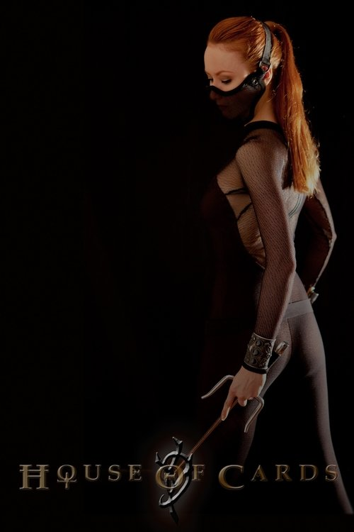

Карточный домик
боевик, драма
Режиссер: Ian Chinsee
В ролях: Винсент Б. Горс, Ian Chinsee, Daniel Cason

Самурай Чамплу СЕРИАЛ
мультфильм, Боевик и Приключения, комедия
Режиссер: Синъитиро Ватанабэ
В ролях: Такэхито Коясу, Кадзуя Накай, Акио Оцука
Сезонов: 1

Гиперпространственная крепость Макросс СЕРИАЛ
мультфильм, Боевик и Приключения, НФ и Фэнтези, Война и Политика
Режиссер: Неизвестно
В ролях: 神谷明, Сё Хаями, Мика Дои
Сезонов: 1

МАГИЧЕСКАЯ БИТВА СЕРИАЛ
мультфильм, Боевик и Приключения, НФ и Фэнтези
Режиссер: Неизвестно
В ролях:
Сезонов: 1

Берсерк СЕРИАЛ
Боевик и Приключения, НФ и Фэнтези, мультфильм
Режиссер: Неизвестно
В ролях: Тосиюки Морикава, Нобутоши Канна, Унсё Исидзука
Сезонов: 1

Бездомный бог СЕРИАЛ
мультфильм, Боевик и Приключения, НФ и Фэнтези
Режиссер: Адачитока
В ролях: Юки Кадзи, Маая Утида, Хироси Камия
Сезонов: 2

Эрго Прокси СЕРИАЛ
мультфильм, детектив, НФ и Фэнтези
Режиссер: Сюко Мурасэ
В ролях: Акико Ядзима, Кодзи Юса, 斉藤梨絵
Сезонов: 1

Дни Сакамото СЕРИАЛ
мультфильм, комедия, Боевик и Приключения
Режиссер: Неизвестно
В ролях: Аянэ Сакура, Саори Хаями, Нао Тояма
Сезонов: 1

Ателье колдовских колпаков СЕРИАЛ
мультфильм, драма, НФ и Фэнтези
Режиссер: Неизвестно
В ролях: Нацуки Ханаэ, Хибику Ямамура, Рэна Мотомура
Сезонов: 1

Футурама: В дикую зелёную даль
мультфильм, комедия, фантастика
Режиссер: Питер Аванзино
В ролях: Сет МакФарлейн, Кэти Сагал, Джон Ди Маджо

Футурама: Зверь с миллиардом спин
мультфильм, комедия, фантастика, мелодрама
Режиссер: Питер Аванзино
В ролях: Кэти Сагал, Бриттани Мёрфи, Джон Ди Маджо

Футурама: Игра Бендера
мультфильм, комедия, фантастика, боевик, фэнтези
Режиссер: Dwayne Carey-Hill
В ролях: Фрэнк Уэлкер, Кэти Сагал, Джон Ди Маджо

Футурама: Большой куш Бендера
мультфильм, комедия, фантастика
Режиссер: Dwayne Carey-Hill
В ролях: Марк Хэмилл, Фрэнк Уэлкер, Кэти Сагал

Царство падальщиков СЕРИАЛ
НФ и Фэнтези, драма, мультфильм, Боевик и Приключения
Режиссер: Чарльз Хюттнер
В ролях: Алиа Шокат, Вунми Мосаку, Сунита Мани
Сезонов: 1

Уоллес и Громит: Самая Дикая Месть
семейный, комедия, приключения, мультфильм
Режиссер: Merlin Crossingham
В ролях: Аджоа Андох, Рис Шерсмит, Диана Морган

Мир изобретений Уоллеса и Громита
семейный, мультфильм
Режиссер: Merlin Crossingham
В ролях: Питер Саллис, Ник Парк, Bob Baker

Уоллес и Громит: Хитроумные Приспособления
мультфильм, комедия
Режиссер: Loyd Price
В ролях: Питер Саллис

Уоллес и Громит: Великий Выходной
семейный, мультфильм, комедия, фантастика, приключения
Режиссер: Ник Парк
В ролях: Питер Саллис

Уоллес и Громит: Выбрить Наголо
семейный, мультфильм, комедия
Режиссер: Ник Парк
В ролях: Энн Рейд, Питер Саллис

Уоллес и Громит: Проклятие Кролика-Оборотня
приключения, мультфильм, комедия, семейный
Режиссер: Steve Box
В ролях: Рэйф Файнс, Хелена Бонем Картер, Марк Гэтисс

Сказки серого волка
семейный, мультфильм, комедия, фэнтези
Режиссер: Jan Lachauer
В ролях: Роуз Лесли, Джемма Чан, Доминик Уэст

Мандалорец СЕРИАЛ
НФ и Фэнтези, Боевик и Приключения
Режиссер: Джон Фавро
В ролях: Педро Паскаль, Кэти Сакхофф
Сезонов: 3

Матч Поинт
драма, мелодрама, триллер
Режиссер: Вуди Аллен
В ролях: Скарлетт Йоханссон, Брайан Кокс, Джонатан Риз Майерс

Покажи мне Луну
мелодрама, комедия
Режиссер: Грег Берланти
В ролях: Скарлетт Йоханссон, Вуди Харрельсон, Ченнинг Татум

Стражи Галактики. Часть 3
фантастика, приключения, боевик
Режиссер: Джеймс Ганн
В ролях: Сильвестр Сталлоне, Вин Дизель, Зои Салдана

Чёрная Пантера: Ваканда навеки
боевик, приключения, фантастика
Режиссер: Райан Куглер
В ролях: Майкл Б. Джордан, Лупита Нионго, Джулия Луи-Дрейфус

Доктор Стрэндж: В мультивселенной безумия
фэнтези, боевик, приключения
Режиссер: Сэм Рэйми
В ролях: Шарлиз Терон, Рэйчел МакАдамс, Джон Красински

Шан-Чи и Легенда Десяти Колец
боевик, приключения, фэнтези
Режиссер: Дестин Дэниел Креттон
В ролях: Тони Люн Чу-Вай, Симу Лю, Бен Кингсли

Чёрная вдова
боевик, приключения, фантастика
Режиссер: Кейт Шортланд
В ролях: Скарлетт Йоханссон, Флоренс Пью, Рэйчел Вайс

Тор: Любовь и гром
фэнтези, боевик, комедия
Режиссер: Тайка Вайтити
В ролях: Вин Дизель, Крис Хемсворт, Натали Портман

Ядовитый плющ
триллер, драма
Режиссер: Katt Shea
В ролях: Леонардо ДиКаприо, Дрю Бэрримор, Том Скеррит

Убийцы цветочной луны
криминал, история, драма
Режиссер: Мартин Скорсезе
В ролях: Леонардо ДиКаприо, Роберт Де Ниро, Брендан Фрейзер

Легенда о волках
мультфильм, семейный, приключения, фэнтези
Режиссер: Tomm Moore
В ролях: Шон Бин, Мария Дойл Кеннеди, Саймон Макберни

Добытчица
мультфильм, военный, драма, семейный
Режиссер: Nora Twomey
В ролях: Laara Sadiq, Ali Kazmi, Saara Chaudry

Потерянное звено
семейный, мультфильм, комедия, приключения, боевик
Режиссер: Крис Батлер
В ролях: Эмма Томпсон, Зои Салдана, Хью Джекман

Семейка монстров
мультфильм, комедия, семейный, фэнтези
Режиссер: Graham Annable
В ролях: Эль Фэннинг, Бен Кингсли, Саймон Пегг

Паранорман, или Как приручить зомби
семейный, мультфильм, приключения, комедия
Режиссер: Сэм Фелл
В ролях: Анна Кендрик, Лесли Манн, Кристофер Минц-Плассе

Война токов
драма, история
Режиссер: Alfonso Gomez-Rejon
В ролях: Том Холланд, Бенедикт Камбербэтч, Николас Холт

Воспламеняющая взглядом
ужасы, фантастика, триллер
Режиссер: Марк Л. Лестер
В ролях: Дрю Бэрримор, Хэзер Локлир, Мартин Шин

В объятиях лжи
детектив, триллер, драма
Режиссер: Neil Jordan
В ролях: Майка Монро, Хлоя Грейс Морец, Изабель Юппер

Нимона
мультфильм, семейный, фэнтези, фантастика, приключения
Режиссер: Трой Квон
В ролях: Хлоя Грейс Морец, Риз Ахмед, Фрэнсис Конрой

Красная шапочка
триллер, драма, фэнтези, детектив, ужасы, мелодрама
Режиссер: Кэтрин Хардвик
В ролях: Аманда Сайфред, Гэри Олдман, Билли Бёрк

Игра на выживание
триллер, детектив
Режиссер: Эйтор Далия
В ролях: Аманда Сайфред, Себастиан Стэн, Уэс Бентли

Манк
драма, история
Режиссер: Дэвид Финчер
В ролях: Аманда Сайфред, Том Бёрк, Гэри Олдман

Письма к Джульетте
комедия, драма, мелодрама
Режиссер: Гари Виник
В ролях: Аманда Сайфред, Гаэль Гарсиа Берналь, Milena Vukotić

Повар на колесах
комедия
Режиссер: Джон Фавро
В ролях: Скарлетт Йоханссон, Роберт Дауни мл., София Вергара

Жизнь, или что-то вроде того
комедия, драма, мелодрама
Режиссер: Stephen Herek
В ролях: Анджелина Джоли, Эдвард Бёрнс, Тони Шалуб

Любовь и монстры
приключения, комедия, фэнтези, фантастика
Режиссер: Майкл Мэтьюз
В ролях: Дилан О'Брайен, Ариана Гринблатт, Майкл Рукер

Очень странные дела СЕРИАЛ
Боевик и Приключения, детектив, НФ и Фэнтези
Режиссер: Росс Даффер
В ролях: Сэди Синк, Милли Бобби Браун, Наталия Дайер
Сезонов: 5

Прошлой ночью в Сохо
ужасы, детектив
Режиссер: Эдгар Райт
В ролях: Аня Тейлор-Джой, Мэтт Смит, Томасин МакКензи

Девять
боевик, приключения, мультфильм, фантастика, триллер
Режиссер: Shane Acker
В ролях: Дженнифер Коннелли, Элайджа Вуд, Фрэнк Уэлкер

Возможности карьеры
мелодрама, комедия
Режиссер: Брайан Гордон
В ролях: Дженнифер Коннелли, Дермот Малруни, Дженни О’Хара

Горячее местечко
мелодрама, криминал, триллер
Режиссер: Деннис Хоппер
В ролях: Дженнифер Коннелли, Дон Джонсон, Уильям Сэдлер

Безумцы СЕРИАЛ
драма
Режиссер: Мэттью Вайнер
В ролях: Кристина Хендрикс, Кирнан Шипка, Джон Хэмм
Сезонов: 7

Мешок с костями СЕРИАЛ
драма, детектив
Режиссер: Стивен Кинг
В ролях: Пирс Броснан, Jason Priestley, Аннабет Гиш
Сезонов: 1

Аннигиляция
фантастика, ужасы
Режиссер: Алекс Гарленд
В ролях: Натали Портман, Дженнифер Джейсон Ли, Оскар Айзек

Девушка в поезде
криминал, детектив, триллер
Режиссер: Tate Taylor
В ролях: Эмили Блант, Ребекка Фергюсон, Джастин Теру

Сияние
ужасы, триллер
Режиссер: Стэнли Кубрик
В ролях: Джек Николсон, Шелли Дюваль, Скэтмэн Крозерс

Доктор Сон
ужасы, фэнтези
Режиссер: Майк Флэнаган
В ролях: Ребекка Фергюсон, Юэн Макгрегор, Брюс Гринвуд

Вуайеристы
триллер
Режиссер: Michael Mohan
В ролях: Сидни Суини, Бен Харди, Джастис Смит

Ночной портье
триллер, криминал, драма
Режиссер: Майкл Кристофер
В ролях: Ана де Армас, Джон Легуизамо, Хелен Хант

Абсолютный убийца
ужасы, комедия, фантастика
Режиссер: Нахнатчка Хан
В ролях: Кирнан Шипка, Лохлин Манро, Джули Боуэн

Без обид
комедия, мелодрама
Режиссер: Джин Ступницки
В ролях: Дженнифер Лоуренс, Эбон Мосс-Бакрак, Мэттью Бродерик

Три билборда на границе Эббинга, Миссури
криминал, драма
Режиссер: Мартин Макдонах
В ролях: Самара Уивинг, Кэтрин Ньютон, Вуди Харрельсон

До встречи с тобой
драма, мелодрама
Режиссер: Теа Шэррок
В ролях: Эмилия Кларк, Сэм Клафлин, Ванесса Кирби

Ничего хорошего в отеле «Эль рояль»
триллер, детектив, криминал
Режиссер: Дрю Годдард
В ролях: Кейли Спэни, Льюис Пуллман, Крис Хемсворт

Девушка, подающая надежды
триллер, криминал, драма
Режиссер: Эмиральд Феннел
В ролях: Элисон Бри, Адам Броди, Дженнифер Кулидж

Подземелья и драконы: Честь среди воров
приключения, фэнтези, комедия
Режиссер: Джонатан Голдштейн
В ролях: София Лиллис, Мишель Родригес, Крис Пайн

Всё везде и сразу
боевик, приключения, фантастика
Режиссер: Daniel Scheinert
В ролях: Джейми Ли Кёртис, Гарии Шум мл., Ке Хюи Куан

Голубоглазый самурай СЕРИАЛ
Боевик и Приключения, мультфильм
Режиссер: Эмбер Ноидзуми
В ролях: Кеннет Брана, Бренда Сонг, Рэндолл Парк
Сезонов: 2

Соколиный Глаз СЕРИАЛ
драма, комедия, Боевик и Приключения
Режиссер: Джонатан Игла
В ролях: Хейли Стайнфелд, Джереми Реннер, Вера Фармига
Сезонов: 1

Аркейн СЕРИАЛ
мультфильм, Боевик и Приключения, НФ и Фэнтези
Режиссер: Кристиан Линке
В ролях: Хейли Стайнфелд, Элла Пернелл
Сезонов: 2

Сексуальное просвещение СЕРИАЛ
комедия, драма
Режиссер: Лори Нанн
В ролях: Эйми Лу Вуд, Джиллиан Андерсон, Эйса Баттерфилд
Сезонов: 4

Евротур
комедия
Режиссер: Джефф Шеффер
В ролях: Мэтт Деймон, Мишель Трахтенберг, Кристин Крук

Одни из нас СЕРИАЛ
драма
Режиссер: Нил Дракманн
В ролях: Изабела Мерсед, Белла Рамзи, Гэбриел Луна
Сезонов: 2

Нет
ужасы, фантастика
Режиссер: Джордан Пил
В ролях: Кит Дэвид, Стивен Ян, Кеке Палмер

Субстанция
ужасы, фантастика
Режиссер: Корали Фаржа
В ролях: Маргарет Куолли, Деннис Куэйд, Деми Мур

Ход королевы СЕРИАЛ
драма
Режиссер: Скотт Фрэнк
В ролях: Аня Тейлор-Джой, Хлоя Пирри
Сезонов: 1

Как я встретил вашу маму СЕРИАЛ
комедия
Режиссер: Craig Thomas
В ролях: Коби Смолдерс, Нил Патрик Харрис, Кристин Милиоти
Сезонов: 9

Йеллоустоун СЕРИАЛ
вестерн, драма
Режиссер: Тейлор Шеридан
В ролях: Коул Хаузер, Келли Райлли, Келси Эсбиль
Сезонов: 5

Ведьмак СЕРИАЛ
драма, Боевик и Приключения
Режиссер: Лорен Шмидт-Хисрих
В ролях: Лоренс Фишбёрн, Лиам Хэмсворт, Фрейя Аллан
Сезонов: 4

Рыцарь Семи Королевств СЕРИАЛ
драма, НФ и Фэнтези, Боевик и Приключения
Режиссер: Джордж Р.Р. Мартин
В ролях: Декстер Сол Анселл, Питер Клэффи
Сезонов: 1

Чернобыль СЕРИАЛ
драма
Режиссер: Крейг Мейзин
В ролях: Джесси Бакли, Барри Кеоган, Стеллан Скарсгард
Сезонов: 1

Вперёд
мультфильм, семейный, фэнтези, приключения, комедия
Режиссер: Дэн Скэнлон
В ролях: Том Холланд, Крис Прэтт, Джулия Луи-Дрейфус

Затерянный город
боевик, приключения, комедия
Режиссер: Aaron Nee
В ролях: Брэд Питт, Сандра Буллок, Дэниел Рэдклифф

Главный герой
комедия, приключения, фантастика
Режиссер: Шон Леви
В ролях: Райан Рейнольдс, Тайка Вайтити, Ченнинг Татум

Чужой: Ромул
ужасы, фантастика
Режиссер: Феде Альварес
В ролях: Кейли Спэни, Изабела Мерсед, Иэн Холм

Чужой: Завет
ужасы, фантастика
Режиссер: Ридли Скотт
В ролях: Майкл Фассбендер, Джеймс Франко, Демиан Бичир

Прометей
фантастика, детектив, ужасы
Режиссер: Ридли Скотт
В ролях: Шарлиз Терон, Идрис Эльба, Майкл Фассбендер

Проект «Конец света»
фантастика, приключения
Режиссер: Фил Лорд
В ролях: Райан Гослинг, Милана Вайнтруб, Сандра Хюллер

Безумный Макс: Дорога Ярости
боевик, приключения, фантастика
Режиссер: Джордж Миллер
В ролях: Шарлиз Терон, Том Харди, Николас Холт

Паразит: Учение о жизни СЕРИАЛ
мультфильм, драма, НФ и Фэнтези, Боевик и Приключения
Режиссер: Неизвестно
В ролях: Нобунага Симадзаки, Ая Хирано
Сезонов: 1

Паприка
фантастика, триллер, мультфильм
Режиссер: Сатоши Кон
В ролях: Мэгуми Хаясибара, Акио Оцука, Сатоши Кон

Судзумэ, закрывающая двери
мультфильм, драма, приключения, фэнтези
Режиссер: Макото Синкай
В ролях: Кана Ханадзава, Сёта Сомэтани, Хокуто Мацумура

Акира
мультфильм, фантастика, боевик
Режиссер: Кацухиро Отомо
В ролях: Такэши Кусао, Мами Кояма, Нодзому Сасаки

Ковбой Бибоп СЕРИАЛ
мультфильм, Боевик и Приключения, НФ и Фэнтези, вестерн
Режиссер: Синъитиро Ватанабэ
В ролях: Мэгуми Хаясибара, Коити Ямадэра, Унсё Исидзука
Сезонов: 1

Атака титанов СЕРИАЛ
мультфильм, НФ и Фэнтези, Боевик и Приключения
Режиссер: Неизвестно
В ролях: Аянэ Сакура, Такэхито Коясу, Юки Кадзи
Сезонов: 4

Харли Квинн СЕРИАЛ
Боевик и Приключения, мультфильм, комедия, НФ и Фэнтези
Режиссер: Patrick Schumacker
В ролях: Кейли Куоко, Лейк Белл
Сезонов: 5

Операция «Фортуна»: Искусство побеждать
боевик, комедия, триллер, приключения
Режиссер: Гай Ричи
В ролях: Джейсон Стейтем, Обри Плаза, Кэри Элвис

Джентльмены
комедия, криминал, боевик
Режиссер: Гай Ричи
В ролях: Колин Фаррелл, Мэттью Макконахи, Чарли Ханнэм

Джентльмены СЕРИАЛ
комедия, драма, криминал
Режиссер: Гай Ричи
В ролях: Тео Джеймс, Кая Скоделарио, Джоэли Ричардсон
Сезонов: 2

Лучше звоните Солу СЕРИАЛ
криминал, драма
Режиссер: Винс Гиллиган
В ролях: Джанкарло Эспозито, Рэй Сихорн, Боб Оденкёрк
Сезонов: 6

Во все тяжкие СЕРИАЛ
драма, криминал
Режиссер: Винс Гиллиган
В ролях: Брайан Крэнстон, Аарон Пол, Боб Оденкёрк
Сезонов: 5

Интерстеллар
приключения, драма, фантастика
Режиссер: Кристофер Нолан
В ролях: Энн Хэтэуэй, Мэтт Деймон, Тимоти Шаламе

Грешники
ужасы, боевик, триллер
Режиссер: Райан Куглер
В ролях: Майкл Б. Джордан, Хейли Стайнфелд, Джек О'Коннелл

Никто
боевик, триллер
Режиссер: Илья Найшуллер
В ролях: Конни Нильсен, Боб Оденкёрк, Кристофер Ллойд

Гордость и предубеждение
драма, мелодрама
Режиссер: Джо Райт
В ролях: Келли Райлли, Розамунд Пайк, Джуди Денч

Гордость и предубеждение СЕРИАЛ
драма
Режиссер: Эндрю Дэвис
В ролях: Колин Ферт, Дженнифер Эль, Anna Chancellor
Сезонов: 1

Добыча
триллер, боевик, фантастика
Режиссер: Дэн Трахтенберг
В ролях: Эмбер Мидтандер, Дэйн ДиЛьегро, Мишель Траш

Хищники
фантастика, боевик, триллер
Режиссер: Нимрод Антал
В ролях: Лоренс Фишбёрн, Уолтон Гоггинс, Эдриен Броуди

Хищник
фантастика, боевик, триллер
Режиссер: Шейн Блэк
В ролях: Киган-Майкл Кей, Ивонн Страховски, Томас Джейн

Хищник 2
фантастика, боевик, триллер
Режиссер: Стивен Хопкинс
В ролях: Гэри Бьюзи, Дэнни Гловер, Роберт Дави

Хищник: Планета смерти
боевик, фантастика, приключения
Режиссер: Дэн Трахтенберг
В ролях: Эль Фэннинг, Росс Даффер, Элисон Райт

Солнцестояние
ужасы, драма, детектив
Режиссер: Ари Астер
В ролях: Флоренс Пью, Уилл Поултер, Джек Рейнор

Человек-бензопила. Фильм: История Резе
мультфильм, боевик, мелодрама, фэнтези
Режиссер: Тацуя Ёсихара
В ролях: Рэина Уэда, Марина Иноуэ, Кэндзиро Цуда

Второй размер, интим предлагать! СЕРИАЛ
мультфильм, комедия, драма
Режиссер: Юске Ямамото
В ролях: Кана Ханадзава, Мамико Ното, Юкари Тамура
Сезонов: 1

Дандадан СЕРИАЛ
мультфильм, Боевик и Приключения, комедия, НФ и Фэнтези
Режиссер: Неизвестно
В ролях: Нацуки Ханаэ, Нана Мидзуки, Маюми Танака
Сезонов: 1

Великая небесная стена СЕРИАЛ
мультфильм, детектив, Боевик и Приключения, НФ и Фэнтези
Режиссер: Неизвестно
В ролях: Кадзуя Накай, Ацуми Танэдзаки, Томоё Куросава
Сезонов: 1

Летнее время СЕРИАЛ
мультфильм, драма, детектив
Режиссер: Неизвестно
В ролях: Кацуюки Кониси, Нацуки Ханаэ, Ёко Хикаса
Сезонов: 1

Монолог фармацевта СЕРИАЛ
мультфильм, драма, детектив
Режиссер: Неизвестно
В ролях: Аой Юки, Кацуюки Кониси, Такэо Оцука
Сезонов: 1

Нежить и Неудача СЕРИАЛ
мультфильм, комедия, НФ и Фэнтези, Боевик и Приключения
Режиссер: Неизвестно
В ролях: Аой Юки, Нобухико Окамото, Нацуки Ханаэ
Сезонов: 1

Кайдзю № 8 СЕРИАЛ
мультфильм, Боевик и Приключения, НФ и Фэнтези
Режиссер: Неизвестно
В ролях: Файруз Ай, Асами Сэто, Кэнго Каваниси
Сезонов: 1

Человек-бензопила СЕРИАЛ
мультфильм, Боевик и Приключения, НФ и Фэнтези, комедия
Режиссер: Неизвестно
В ролях: Файруз Ай, Сёго Саката, Кикуносукэ Тоя
Сезонов: 1

Адский рай СЕРИАЛ
мультфильм, Боевик и Приключения, НФ и Фэнтези
Режиссер: Юдзи Каку
В ролях: Юмири Ханамори, Риэ Такахаси, Кономи Кохара
Сезонов: 1

Эльфийская Песнь СЕРИАЛ
Боевик и Приключения, мультфильм, драма, детектив, НФ и Фэнтези
Режиссер: Неизвестно
В ролях: Мамико Ното, Хироаки Хирата, Санаэ Кобаяши
Сезонов: 1

Токийский Гуль СЕРИАЛ
мультфильм, драма, НФ и Фэнтези
Режиссер: Неизвестно
В ролях: Такахиро Сакурай, Нацуки Ханаэ, Сора Амамия
Сезонов: 4

Сейлор Мун СЕРИАЛ
Боевик и Приключения, мультфильм, комедия, НФ и Фэнтези, Детский
Режиссер: Неизвестно
В ролях: Айя Хисакава, Котоно Мицуиси, 古谷徹
Сезонов: 5

Ванпанчмен СЕРИАЛ
мультфильм, комедия, Боевик и Приключения, НФ и Фэнтези
Режиссер: Неизвестно
В ролях: Макото Фурукава
Сезонов: 3

Истребитель демонов СЕРИАЛ
мультфильм, Боевик и Приключения, НФ и Фэнтези
Режиссер: Неизвестно
В ролях: Ёсицугу Мацуока, Нацуки Ханаэ, Акари Кито
Сезонов: 5

Последний изгнанник СЕРИАЛ
мультфильм, Боевик и Приключения, НФ и Фэнтези
Режиссер: Неизвестно
В ролях: Аи Каяно, Аой Юки, Миюки Савасиро
Сезонов: 2

Хеллсинг: Война с нечистью СЕРИАЛ
Боевик и Приключения, мультфильм, детектив, НФ и Фэнтези
Режиссер: Уманосукэ Ида
В ролях: Фумико Орикаса, Ёсико Сакакибара, Дзёдзи Наката
Сезонов: 1

Стальной Алхимик: Братство СЕРИАЛ
мультфильм, Боевик и Приключения, НФ и Фэнтези, драма
Режиссер: Неизвестно
В ролях: Риэ Кугимия, Синъитиро Мики, Роми Пак
Сезонов: 1

Стальной алхимик СЕРИАЛ
мультфильм, Боевик и Приключения, НФ и Фэнтези
Режиссер: Неизвестно
В ролях: Кэйдзи Фудзивара, Риэ Кугимия, Нана Мидзуки
Сезонов: 1

Скитальцы СЕРИАЛ
мультфильм, НФ и Фэнтези, Боевик и Приключения, комедия
Режиссер: Неизвестно
В ролях: Юити Накамура, Мицуки Сайга, Тацухиса Судзуки
Сезонов: 1

Дороро СЕРИАЛ
мультфильм, Боевик и Приключения
Режиссер: Осаму Тэдзука
В ролях: Акио Оцука, Шоя Чиба, Наоя Утида
Сезонов: 1

Пираты «Чёрной лагуны» СЕРИАЛ
Боевик и Приключения, мультфильм, драма, криминал
Режиссер: Неизвестно
В ролях: Хироаки Хирата, Дайсукэ Намикава, Мэгуми Тоёгути
Сезонов: 1

Легенда о Корре СЕРИАЛ
мультфильм, Боевик и Приключения, НФ и Фэнтези, семейный
Режиссер: Брайан Кониецко
В ролях: Джей Кей Симмонс, Ди Брэдли Бейкер, Пи Джей Бирн
Сезонов: 4

Аватар: Легенда об Аанге СЕРИАЛ
мультфильм, Боевик и Приключения, НФ и Фэнтези
Режиссер: Майкл Данте Димартино
В ролях: Ди Брэдли Бейкер, Мэй Уитман, Данте Баско
Сезонов: 3

Удивительный мир Гамбола СЕРИАЛ
мультфильм, семейный, НФ и Фэнтези, комедия
Режиссер: Бен Боклет
В ролях: Nicolas Cantu, Сандра Дикинсон, Тереза Галлахер
Сезонов: 6

Южный Парк СЕРИАЛ
мультфильм, комедия
Режиссер: Трей Паркер
В ролях: Трей Паркер, Mona Marshall, Мэтт Стоун
Сезонов: 28

Рик и Морти СЕРИАЛ
мультфильм, комедия, НФ и Фэнтези, Боевик и Приключения
Режиссер: Дэн Хармон
В ролях: Сара Чок, Крис Парнелл, Спенсер Грэммер
Сезонов: 9

Футурама СЕРИАЛ
мультфильм, комедия, НФ и Фэнтези
Режиссер: Мэтт Грейнинг
В ролях: Кэти Сагал, Джон Ди Маджо, Морис Ламарш
Сезонов: 10

Эон Флакс СЕРИАЛ
мультфильм, НФ и Фэнтези, Боевик и Приключения
Режиссер: Питер Чунг
В ролях: Джон Рафтер Ли, Denise Poirier
Сезонов: 3

Тед Лассо СЕРИАЛ
драма, комедия
Режиссер: Джейсон Судейкис
В ролях: Джуно Темпл, Ханна Уэддингхэм, Джейсон Судейкис
Сезонов: 4

Удивительная миссис Мейзел СЕРИАЛ
комедия, драма
Режиссер: Amy Sherman-Palladino
В ролях: Рэйчел Броснахэн, Марин Хинкль, Тони Шалуб
Сезонов: 5

Первый брак Джорджи и Мэнди СЕРИАЛ
комедия
Режиссер: Чак Лорри
В ролях: Emily Osment, Уилл Сассо, Montana Jordan
Сезонов: 2

Детство Шелдона СЕРИАЛ
комедия, семейный, драма
Режиссер: Стивен Моларо
В ролях: Иэн Армитидж, Лэнс Барбер, Джим Парсонс
Сезонов: 7

Теория большого взрыва СЕРИАЛ
комедия
Режиссер: Чак Лорри
В ролях: Кейли Куоко, Саймон Хелберг, Джим Парсонс
Сезонов: 12

Секретные материалы СЕРИАЛ
детектив, НФ и Фэнтези, криминал
Режиссер: Крис Картер
В ролях: Джиллиан Андерсон, Дэвид Духовны, Митч Пиледжи
Сезонов: 11

Светлячок СЕРИАЛ
драма, Боевик и Приключения, НФ и Фэнтези
Режиссер: Джосс Уидон
В ролях: Морена Баккарин, Нейтан Филлион, Алан Тьюдик
Сезонов: 1

Мамаша СЕРИАЛ
комедия, драма
Режиссер: Эдди Городецки
В ролях: Джейми Прессли, Уильям Фихтнер, Эллисон Дженни
Сезонов: 8

Игра Престолов СЕРИАЛ
НФ и Фэнтези, драма, Боевик и Приключения
Режиссер: Дэвид Бениофф
В ролях: Эмилия Кларк, Мэйси Уильямс, Софи Тёрнер
Сезонов: 8

Друзья СЕРИАЛ
комедия
Режиссер: Марта Кауффман
В ролях: Дженнифер Энистон, Кортни Кокс, Лиза Кудроу
Сезонов: 10

Дарма и Грег СЕРИАЛ
комедия
Режиссер: Чак Лорри
В ролях: Дженна Эльфман, Susan Sullivan, Thomas Gibson
Сезонов: 5

Город хищниц СЕРИАЛ
комедия
Режиссер: Билл Лоуренс
В ролях: Кортни Кокс, Криста Миллер, Дэн Берд
Сезонов: 6

Уэнздей СЕРИАЛ
НФ и Фэнтези, детектив, комедия
Режиссер: Майлз Миллар
В ролях: Дженна Ортега, Эмма Майерс, Кэтрин Зета-Джонс
Сезонов: 3

Настоящий детектив СЕРИАЛ
драма, детектив
Режиссер: Nic Pizzolatto
В ролях: Джоди Фостер, Финн Беннетт, Фиона Шоу
Сезонов: 4

Метод Комински СЕРИАЛ
комедия, драма
Режиссер: Чак Лорри
В ролях: Майкл Дуглас, Кэтлин Тёрнер, Nancy Travis
Сезонов: 3

Шерлок СЕРИАЛ
криминал, драма, детектив
Режиссер: Марк Гэтисс
В ролях: Бенедикт Камбербэтч, Мартин Фримен
Сезонов: 4

ВандаВижн СЕРИАЛ
НФ и Фэнтези, детектив, драма
Режиссер: Джек Шефер
В ролях: Кэт Деннингс, Эван Питерс, Элизабет Олсен
Сезонов: 1

She-Hulk: Attorney at Law СЕРИАЛ
комедия, НФ и Фэнтези
Режиссер: Джессика Гао
В ролях: Татьяна Маслани, Джамила Джамил, Джош Сегарра
Сезонов: 1

Лютер СЕРИАЛ
криминал, драма, детектив
Режиссер: Нил Кросс
В ролях: Идрис Эльба, Рут Уилсон, Вунми Мосаку
Сезонов: 5

Любовь. Смерть. Роботы СЕРИАЛ
мультфильм, НФ и Фэнтези
Режиссер: Тим Миллер
В ролях:
Сезонов: 4

Остаться в живых СЕРИАЛ
детектив, Боевик и Приключения, драма
Режиссер: Джей Джей Абрамс
В ролях: Эванджелин Лилли, Дэниел Дэ Ким, Кен Люн
Сезонов: 6

Доктор Хаус СЕРИАЛ
драма
Режиссер: Дэвид Шор
В ролях: Одетт Эннэйбл, Хью Лори, Омар Эппс
Сезонов: 8

Девочки Гилмор СЕРИАЛ
комедия, драма
Режиссер: Amy Sherman-Palladino
В ролях: Мелисса Маккарти, Алексис Бледел, Лиза Вейл
Сезонов: 7

Эйфория СЕРИАЛ
драма
Режиссер: Сэм Левинсон
В ролях: Сидни Суини, Джейкоб Элорди, Зендея
Сезонов: 3

Вдовы
драма, криминал, триллер
Режиссер: Стив Маккуин
В ролях: Джон Бернтал, Лиам Нисон, Колин Фаррелл

Собака на сене
комедия
Режиссер: Ян Фрид
В ролях: Маргарита Терехова, Николай Караченцов, Михаил Боярский

Служебный роман
комедия, мелодрама
Режиссер: Эльдар Рязанов
В ролях: Андрей Мягков, Людмила Иванова, Алиса Фрейндлих

Обыкновенное чудо
драма, комедия, мелодрама, фэнтези
Режиссер: Марк Захаров
В ролях: Евгений Леонов, Олег Янковский, Ирина Купченко

Мэри Поппинс, до свидания
семейный, фэнтези, музыка, телевизионный фильм
Режиссер: Леонид Квинихидзе
В ролях: Олег Табаков, Лариса Удовиченко, Игорь Ясулович

Каникулы Петрова и Васечкина, обыкновенные и невероятные
комедия, семейный
Режиссер: Владимир Алеников
В ролях: Софико Чиаурели, Алексей Горбунов, Егор Дружинин

Приключения Петрова и Васечкина, обыкновенные и невероятные
комедия, семейный
Режиссер: Владимир Алеников
В ролях: Людмила Иванова, Юрий Медведев, Анатолий Кузнецов

Дон Сезар де Базан
комедия, мелодрама, приключения
Режиссер: Ян Фрид
В ролях: Михаил Боярский, Игорь Дмитриев, Юрий Богатырёв

Гостья из будущего
приключения, семейный, фантастика
Режиссер: Павел Арсенов
В ролях: Владимир Носик, Борис Щербаков, Михаил Кононов

Гардемарины, вперед!
приключения, история
Режиссер: Светлана Дружинина
В ролях: Иннокентий Смоктуновский, Татьяна Лютаева, Сергей Жигунов

Большая перемена
комедия, мелодрама
Режиссер: Алексей Коренев
В ролях: Евгений Леонов, Ролан Быков, Владимир Басов

А зори здесь тихие
драма, история, военный
Режиссер: Станислав Ростоцкий
В ролях: Владимир Ивашов, Виктор Авдюшко, Людмила Зайцева

Бронзовая птица
приключения, семейный, телевизионный фильм
Режиссер: Николай Калинин
В ролях: Владимир Эренберг, Николай Крюков, Виктор Чекмарёв

Кортик
приключения, семейный, телевизионный фильм
Режиссер: Николай Калинин
В ролях: Зоя Фёдорова, Эммануил Виторган, Роман Филиппов

Фара
драма
Режиссер: Abay Karpykov
В ролях: Кристина Орбакайте, Саги Ашимов, Шамшагуль Мендиярова

Суета сует
комедия, мелодрама
Режиссер: Алла Сурикова
В ролях: Людмила Иванова, Леонид Куравлёв, Мария Виноградова

Ширли-мырли
комедия
Режиссер: Владимир Меньшов
В ролях: Леонид Куравлёв, Инна Чурикова, Ролан Быков

Человек с бульвара Капуцинов
комедия, мелодрама, вестерн, музыка
Режиссер: Алла Сурикова
В ролях: Юрий Медведев, Николай Караченцов, Олег Анофриев

Формула любви
мелодрама, комедия
Режиссер: Марк Захаров
В ролях: Татьяна Пельтцер, Леонид Броневой, Елена Валюшкина

Сильва
музыка, комедия, мелодрама, телевизионный фильм
Режиссер: Ян Фрид
В ролях: Владимир Басов, Игорь Дмитриев, Ивар Калнынш

Отцы и деды
комедия, мелодрама
Режиссер: Юрий Егоров
В ролях: Анатолий Папанов, Галина Польских, Валентин Смирнитский

Отроки во Вселенной
фантастика, семейный, приключения, комедия
Режиссер: Ричард Викторов
В ролях: Иннокентий Смоктуновский, Наталья Фатеева, Лев Дуров

Операция «Ы» и другие приключения Шурика
комедия
Режиссер: Леонид Гайдай
В ролях: Юрий Никулин, Георгий Вицин, Владимир Басов

Не могу сказать «Прощай»
драма, мелодрама
Режиссер: Борис Дуров
В ролях: Владимир Антоник, Александр Коршунов, Светлана Дирина

Москва - Кассиопея
фантастика, семейный, приключения, комедия
Режиссер: Ричард Викторов
В ролях: Иннокентий Смоктуновский, Наталья Фатеева, Лев Дуров

Москва слезам не верит
драма, комедия, мелодрама
Режиссер: Владимир Меньшов
В ролях: Иннокентий Смоктуновский, Раиса Рязанова, Алексей Баталов

Менялы
криминал, комедия
Режиссер: Георгий Шенгелия
В ролях: Владимир Ильин, Люсьена Овчинникова, Валентина Теличкина

Любовь и голуби
комедия, мелодрама
Режиссер: Владимир Меньшов
В ролях: Людмила Гурченко, Владимир Меньшов, Сергей Юрский

Летучая мышь
комедия, музыка, мелодрама
Режиссер: Ян Фрид
В ролях: Олег Видов, Лариса Удовиченко, Игорь Дмитриев

Кавказская пленница, или Новые приключения Шурика
комедия
Режиссер: Леонид Гайдай
В ролях: Наталья Варлей, Юрий Никулин, Георгий Вицин

Ирония судьбы, или С легким паром!
телевизионный фильм, комедия, мелодрама
Режиссер: Эльдар Рязанов
В ролях: Андрей Мягков, Любовь Соколова, Эльдар Рязанов

Иван Васильевич меняет профессию
комедия, фантастика
Режиссер: Леонид Гайдай
В ролях: Леонид Куравлёв, Владимир Этуш, Наталья Крачковская

Джентльмены удачи
комедия, криминал, драма
Режиссер: Александр Серый
В ролях: Евгений Леонов, Анатолий Папанов, Георгий Вицин

Девчата
комедия, мелодрама
Режиссер: Юрий Чулюкин
В ролях: Виктор Маркин, Надежда Румянцева, Инна Макарова

Дайте жалобную книгу
комедия
Режиссер: Эльдар Рязанов
В ролях: Анатолий Папанов, Юрий Никулин, Георгий Вицин

Весна на Заречной улице
драма, мелодрама
Режиссер: Марлен Хуциев
В ролях: Виктор Маркин, Юрий Белов, Николай Рыбников

В бой идут одни старики
военный, драма, комедия, мелодрама
Режиссер: Леонид Быков
В ролях: Леонид Быков, Юрий Саранцев, Евгения Симонова

Твоё имя
мультфильм, мелодрама, драма
Режиссер: Макото Синкай
В ролях: Кана Ханадзава, Кадзухико Иноуэ, Аой Юки

Манускрипт ниндзя
фэнтези, мультфильм, боевик
Режиссер: Ёсиаки Кавадзири
В ролях: Тосихико Сэки, Коити Ямадэра, Ичиро Нагай

Я исповедуюсь
драма, триллер, криминал
Режиссер: Альфред Хичкок
В ролях: Альфред Хичкок, Энн Бакстер, Montgomery Clift

Ребекка
детектив, мелодрама, триллер, драма
Режиссер: Альфред Хичкок
В ролях: Лоренс Оливье, Leo G. Carroll, Джудит Андерсон

Птицы
ужасы, триллер
Режиссер: Альфред Хичкок
В ролях: Morgan Brittany, Альфред Хичкок, Вероника Картрайт

Психо
ужасы, триллер, детектив
Режиссер: Альфред Хичкок
В ролях: Джанет Ли, Мартин Болсам, John McIntire

Поймать вора
детектив, мелодрама, триллер
Режиссер: Альфред Хичкок
В ролях: Альфред Хичкок, Кэри Грант, Грейс Келли

Подозрение
детектив, мелодрама, триллер
Режиссер: Альфред Хичкок
В ролях: Кэри Грант, Leo G. Carroll, Джоан Фонтейн

Окно во двор
триллер, детектив, драма
Режиссер: Альфред Хичкок
В ролях: Джеймс Стюарт, Рэймонд Бёрр, Грейс Келли

Неприятности с Гарри
комедия, детектив
Режиссер: Альфред Хичкок
В ролях: Ширли Маклейн, Альфред Хичкок, John Forsythe

Незнакомцы в поезде
криминал, триллер, драма
Режиссер: Альфред Хичкок
В ролях: Альфред Хичкок, Leo G. Carroll, Мэрион Лорн

На север через северо-запад
триллер, приключения
Режиссер: Альфред Хичкок
В ролях: Кэри Грант, Мартин Ландау, Эва Мари Сейнт

Марни
триллер, детектив, мелодрама
Режиссер: Альфред Хичкок
В ролях: Шон Коннери, Mariette Hartley, Брюс Дерн

Заворожённый
триллер, детектив, мелодрама
Режиссер: Альфред Хичкок
В ролях: Грегори Пек, Leo G. Carroll, Ингрид Бергман

Дурная слава
триллер, мелодрама, детектив, драма
Режиссер: Альфред Хичкок
В ролях: Кэри Грант, Ингрид Бергман, Клод Рейнс

Головокружение
детектив, мелодрама, триллер
Режиссер: Альфред Хичкок
В ролях: Джеймс Стюарт, Альфред Хичкок, Ellen Corby

Верёвка
триллер, криминал, драма
Режиссер: Альфред Хичкок
В ролях: Джеймс Стюарт, Альфред Хичкок, Cedric Hardwicke

В случае убийства набирайте «М»
триллер, криминал, драма
Режиссер: Альфред Хичкок
В ролях: Альфред Хичкок, Грейс Келли, John Williams

Душа
мультфильм, семейный, драма, музыка, фэнтези
Режиссер: Пит Доктер
В ролях: Давид Диггс, Алиси Брага, Анджела Бассетт

Похитители тел
ужасы, фантастика
Режиссер: Абель Феррара
В ролях: Форест Уитакер, Габриель Анвар, Terry Kinney

Жар тела
триллер, криминал
Режиссер: Лоуренс Кэздан
В ролях: Микки Рурк, Тед Дэнсон, Кэтлин Тёрнер

Двойной просчёт
триллер, криминал, детектив
Режиссер: Брюс Бересфорд
В ролях: Томми Ли Джонс, Брюс Гринвуд, Эшли Джадд

Привет, Джули!
мелодрама, драма
Режиссер: Роб Райнер
В ролях: Ребекка Де Морнэй, Энтони Эдвардс, Айдан Куинн

Довод
боевик, триллер, фантастика
Режиссер: Кристофер Нолан
В ролях: Роберт Паттинсон, Майкл Кейн, Кеннет Брана

Особо тяжкие преступления
драма, детектив, триллер, криминал
Режиссер: Carl Franklin
В ролях: Морган Фримен, Джеймс Кэвизел, Аманда Пит

Челюсти
ужасы, триллер, приключения
Режиссер: Стивен Спилберг
В ролях: Ричард Дрейфус, Рой Шайдер, Мюррэй Хэмилтон

Кролик Джоджо
комедия, военный, драма
Режиссер: Тайка Вайтити
В ролях: Скарлетт Йоханссон, Тайка Вайтити, Сэм Рокуэлл

Поцелуй навылет
комедия, криминал, детектив, триллер
Режиссер: Шейн Блэк
В ролях: Роберт Дауни мл., Мишель Монахэн, Shannyn Sossamon

Водительские права
комедия, семейный, мелодрама
Режиссер: Greg Beeman
В ролях: Хизер Грэм, Кори Фельдман, Richard Masur

Коварство
комедия
Режиссер: Salvatore Samperi
В ролях: Laura Antonelli, Tina Aumont, Lilla Brignone

Полицейская академия 5: Место назначения — Майами-Бич
комедия, криминал
Режиссер: Alan Myerson
В ролях: Рене Обержонуа, Джордж Бэйли, David Graf

Полицейская академия 4: Граждане в дозоре
комедия, криминал
Режиссер: Jim Drake
В ролях: Шэрон Стоун, Steve Guttenberg, Дэвид Спейд

Полицейская академия 3: Переподготовка
комедия, криминал
Режиссер: Jerry Paris
В ролях: Steve Guttenberg, David Graf, Bobcat Goldthwait

Полицейская академия 2: Их первое задание
комедия, криминал
Режиссер: Jerry Paris
В ролях: Colleen Camp, Steve Guttenberg, Bobcat Goldthwait

Полицейская академия
комедия, криминал
Режиссер: Хью Уилсон
В ролях: Steve Guttenberg, Ким Кэттролл, David Graf

Ракетчик
боевик, приключения, фантастика, семейный
Режиссер: Джо Джонстон
В ролях: Дженнифер Коннелли, Тимоти Далтон, Терри О'Куинн

Река не течет вспять
приключения, вестерн
Режиссер: Otto Preminger
В ролях: Мэрилин Монро, Роберт Митчем, Rory Calhoun

Особо опасны
криминал, драма, триллер
Режиссер: Оливер Стоун
В ролях: Сальма Хайек, Джон Траволта, Блейк Лайвли

Ничего не вижу, ничего не слышу
комедия, криминал
Режиссер: Arthur Hiller
В ролях: Кевин Спейси, Лорен Том, Джоан Северанс

Муха
ужасы, фантастика
Режиссер: Дэвид Кроненберг
В ролях: Джефф Голдблюм, Джина Дэвис, Дэвид Кроненберг

Снега Килиманджаро
приключения, мелодрама, драма
Режиссер: Henry King
В ролях: Грегори Пек, Leo G. Carroll, Ава Гарднер

Эммануэль
драма, мелодрама
Режиссер: Just Jaeckin
В ролях: Сильвия Кристель, Alain Cuny, Christine Boisson

Шоу-гёлз
драма
Режиссер: Пол Верховен
В ролях: Джина Гершон, Кайл МакЛахлен, Роберт Дави

Слияние двух лун
драма, мелодрама
Режиссер: Zalman King
В ролях: Милла Йовович, Шерилин Фенн, Даббс Грир

История О
драма
Режиссер: Just Jaeckin
В ролях: Удо Кир, Anthony Steel, Жан Гавен

Дикая орхидея
драма, мелодрама
Режиссер: Zalman King
В ролях: Жаклин Биссет, Брюс Гринвуд, Микки Рурк

9 1/2 недель
драма, мелодрама
Режиссер: Adrian Lyne
В ролях: Микки Рурк, Ким Бейсингер, Кристин Барански

Q: Загадка женщины
драма, мелодрама
Режиссер: Laurent Bouhnik
В ролях: Дебора Реви, Hélène Zimmer, Johan Libéreau

Властелин колец: Возвращение короля
приключения, фэнтези, боевик
Режиссер: Питер Джексон
В ролях: Карл Урбан, Вигго Мортенсен, Кейт Бланшетт

Властелин колец: Две крепости
приключения, фэнтези, боевик
Режиссер: Питер Джексон
В ролях: Карл Урбан, Вигго Мортенсен, Кейт Бланшетт

Властелин колец: Братство кольца
приключения, фэнтези, боевик
Режиссер: Питер Джексон
В ролях: Вигго Мортенсен, Кейт Бланшетт, Шон Эстин

Рыжая Соня
приключения, фэнтези, боевик
Режиссер: Ричард Флейшер
В ролях: Арнольд Шварценеггер, Brigitte Nielsen, Сэндал Бергман

Конан-варвар
приключения, фэнтези, боевик
Режиссер: Маркус Ниспель
В ролях: Джейсон Момоа, Рон Перлман, Стивен Лэнг

Конан Варвар
приключения, фэнтези, боевик
Режиссер: Джон Милиус
В ролях: Арнольд Шварценеггер, Джек Тейлор, Макс фон Сюдов

Подставное тело
криминал, детектив, триллер
Режиссер: Брайан Де Пальма
В ролях: Мелани Гриффит, Deborah Shelton, Грегг Генри

Море соблазна
триллер, детектив, драма
Режиссер: Стивен Найт
В ролях: Энн Хэтэуэй, Дайан Лейн, Мэттью Макконахи

Индиана Джонс и Колесо Судьбы
приключения, боевик
Режиссер: Джеймс Мэнголд
В ролях: Мадс Миккельсен, Тоби Джонс, Харрисон Форд

Индиана Джонс и Королевство хрустального черепа
приключения, боевик
Режиссер: Стивен Спилберг
В ролях: Харрисон Форд, Кейт Бланшетт, Шайа ЛаБаф

Индиана Джонс и последний крестовый поход
приключения, боевик
Режиссер: Стивен Спилберг
В ролях: Шон Коннери, Харрисон Форд, Джон Рис-Дэвис

Индиана Джонс и Храм Судьбы
приключения, боевик
Режиссер: Стивен Спилберг
В ролях: Харрисон Форд, Ке Хюи Куан, Дэн Эйкройд

Индиана Джонс: В поисках утраченного ковчега
приключения, боевик
Режиссер: Стивен Спилберг
В ролях: Харрисон Форд, Альфред Молина, Джон Рис-Дэвис

Балбесы
приключения, комедия, семейный
Режиссер: Richard Donner
В ролях: Джош Бролин, Шон Эстин, Ке Хюи Куан

Объезд
драма, триллер
Режиссер: Edgar G. Ulmer
В ролях: Tom Neal, Don Brodie, Harry Strang

Ниагара
триллер, криминал
Режиссер: Henry Hathaway
В ролях: Мэрилин Монро, Джозеф Коттен, Гарри Кэри мл.

Мальтийский сокол
детектив, криминал, триллер
Режиссер: Джон Хьюстон
В ролях: Хамфри Богарт, Элиша Кук-младший, Петер Лорре

Иметь и не иметь
приключения, мелодрама, военный
Режиссер: Говард Хоукс
В ролях: Хамфри Богарт, Лорен Бэколл, Walter Brennan

Газовый свет
триллер, драма, детектив, криминал
Режиссер: Джордж Кьюкор
В ролях: Анджела Лэнсбери, Ингрид Бергман, Джозеф Коттен

Сансет бульвар
драма
Режиссер: Billy Wilder
В ролях: Уильям Холден, Бастер Китон, Larry J. Blake

Рождество на двоих
комедия, драма, мелодрама
Режиссер: Пол Фиг
В ролях: Эмилия Кларк, Эмма Томпсон, Мишель Йео

Маленькие Женщины
драма, мелодрама
Режиссер: Грета Гервиг
В ролях: Эмма Уотсон, Флоренс Пью, Тимоти Шаламе

Троя
военный, боевик, история
Режиссер: Вольфганг Петерсен
В ролях: Брэд Питт, Роуз Бирн, Шон Бин

Мушкeтёры
приключения, боевик, триллер
Режиссер: Пол У. С. Андерсон
В ролях: Милла Йовович, Джуно Темпл, Мадс Миккельсен

Жанна д'Арк
приключения, драма, боевик, история, военный
Режиссер: Люк Бессон
В ролях: Милла Йовович, Венсан Кассель, Дастин Хоффман

Ещё одна из рода Болейн
драма, мелодрама, история
Режиссер: Джастин Чадвик
В ролях: Скарлетт Йоханссон, Натали Портман, Джуно Темпл

Гладиатор
боевик, драма, приключения
Режиссер: Ридли Скотт
В ролях: Конни Нильсен, Рассел Кроу, Хоакин Феникс

Аноним
драма, история, триллер
Режиссер: Роланд Эммерих
В ролях: Дэвид Тьюлис, Джейми Кэмпбелл Бауэр, Джоэли Ричардсон

Достать ножи: Стеклянная луковица
комедия, криминал, детектив
Режиссер: Райан Джонсон
В ролях: Дейв Батиста, Эдвард Нортон, Итан Хоук

Достать ножи
комедия, криминал, детектив
Режиссер: Райан Джонсон
В ролях: Ана де Армас, Джейми Ли Кёртис, Крис Эванс

Догвилль
криминал, драма, триллер
Режиссер: Ларс фон Триер
В ролях: Николь Кидман, Пол Беттани, Стеллан Скарсгард

Одинокий рейнджер
боевик, приключения, вестерн
Режиссер: Гор Вербински
В ролях: Джонни Депп, Гил Бирмингем, Уильям Фихтнер

Великолепная семерка
вестерн, боевик, приключения
Режиссер: John Sturges
В ролях: Чарльз Бронсон, Роберт Вон, Джеймс Коберн

Шербурские зонтики
драма, мелодрама
Режиссер: Jacques Demy
В ролях: Катрин Денёв, Dorothée Blanck, Marc Michel

Гарри Поттер и Орден Феникса
приключения, фэнтези
Режиссер: Дэвид Йейтс
В ролях: Эмма Уотсон, Эмма Томпсон, Дэниел Рэдклифф

Гарри Поттер и Кубок огня
приключения, фэнтези
Режиссер: Mike Newell
В ролях: Эмма Уотсон, Дэниел Рэдклифф, Роберт Паттинсон

Гарри Поттер и узник Азкабана
приключения, фэнтези
Режиссер: Альфонсо Куарон
В ролях: Эмма Уотсон, Эмма Томпсон, Дэниел Рэдклифф

Гарри Поттер и Тайная комната
приключения, фэнтези
Режиссер: Крис Коламбус
В ролях: Эмма Уотсон, Дэниел Рэдклифф, Тоби Джонс

Гарри Поттер и Дары Смерти: Часть I
приключения, фэнтези
Режиссер: Дэвид Йейтс
В ролях: Эмма Уотсон, Дэниел Рэдклифф, Тоби Джонс

Гарри Поттер и Дары Смерти: Часть II
приключения, фэнтези
Режиссер: Дэвид Йейтс
В ролях: Эмма Уотсон, Дэниел Рэдклифф, Гэри Олдман

Гарри Поттер и Принц-полукровка
приключения, фэнтези
Режиссер: Дэвид Йейтс
В ролях: Эмма Уотсон, Дэниел Рэдклифф, Хелена Бонем Картер

Леди-ястреб
приключения, комедия, фэнтези
Режиссер: Richard Donner
В ролях: Мишель Пфайффер, Альфред Молина, Рутгер Хауэр

Джуманджи
приключения, фэнтези, семейный
Режиссер: Джо Джонстон
В ролях: Кирстен Данст, Робин Уильямс, Бонни Хант

Малефисента
фэнтези, приключения, боевик, семейный, мелодрама
Режиссер: Robert Stromberg
В ролях: Эль Фэннинг, Анджелина Джоли, Джуно Темпл

Зачарованная
комедия, семейный, фэнтези, мелодрама
Режиссер: Кевин Лима
В ролях: Эми Адамс, Джеймс Марсден, Патрик Демпси

Звёздная пыль
приключения, фэнтези, мелодрама, семейный
Режиссер: Мэттью Вон
В ролях: Роберт Де Ниро, Мишель Пфайффер, Клэр Дэйнс

Пираты Карибского моря: Мертвецы не рассказывают сказки
приключения, боевик, фэнтези
Режиссер: Эспен Сандберг
В ролях: Джонни Депп, Гольшифте Фарахани, Хавьер Бардем

Пираты Карибского моря: На странных берегах
приключения, боевик, фэнтези
Режиссер: Роб Маршалл
В ролях: Джонни Депп, Сэм Клафлин, Джуди Денч

Пираты Карибского моря: На краю света
приключения, фэнтези, боевик
Режиссер: Гор Вербински
В ролях: Джонни Депп, Кира Найтли, Билл Найи

Пираты Карибского моря: Сундук мертвеца
приключения, фэнтези, боевик
Режиссер: Гор Вербински
В ролях: Джонни Депп, Кира Найтли, Билл Найи

Пираты Карибского моря: Проклятие Чёрной жемчужины
приключения, фэнтези, боевик
Режиссер: Гор Вербински
В ролях: Джонни Депп, Зои Салдана, Кира Найтли

Лара Крофт: Расхитительница гробниц 2 - Колыбель жизни
приключения, боевик, фэнтези
Режиссер: Ян де Бонт
В ролях: Анджелина Джоли, Джерард Батлер, Джимон Хонсу

Лара Крофт: Расхитительница гробниц
приключения, боевик, фэнтези
Режиссер: Саймон Уэст
В ролях: Анджелина Джоли, Дэниел Крейг, Джон Войт

Луна
мультфильм, семейный, фэнтези
Режиссер: Enrico Casarosa
В ролях: Tony Fucile, Krista Sheffler, Phil Sheridan

Храбрая сердцем: Легенда о МорДу
мультфильм, семейный, фэнтези, драма
Режиссер: Brian Larsen
В ролях: Джули Уолтерс, Стив Пёрселл, Callum O'Neil

Люксо младший
мультфильм, комедия
Режиссер: Джон Лассетер
В ролях:

Безделушка
мультфильм, комедия, семейный
Режиссер: Джон Лассетер
В ролях:

Игра Джери
мультфильм, комедия, семейный
Режиссер: Jan Pinkava
В ролях: Боб Питерсон

О птичках
мультфильм, семейный, комедия
Режиссер: Ральф Эгглстон
В ролях: Ральф Эгглстон

Человек-оркестр
мультфильм, семейный, музыка, комедия
Режиссер: Mark Andrews
В ролях:

Джек-Джек атакует
приключения, мультфильм, семейный
Режиссер: Брэд Бёрд
В ролях: Джейсон Ли, Eli Fucile, Bret Parker

Барашек
мультфильм, семейный, музыка
Режиссер: Bud Luckey
В ролях: Bud Luckey

Мэтр и Призрачный Свет
мультфильм, комедия, семейный, ужасы
Режиссер: Джон Лассетер
В ролях: Оуэн Уилсон, Кэтрин Хелмонд, Пол Ньюман

Твой друг крыса
мультфильм, семейный, комедия, документальный
Режиссер: Jim Capobianco
В ролях: Пэттон Освальд, Джон Ратценбергер, Питер Сон

Похищение
семейный, мультфильм, фантастика, комедия
Режиссер: Гэри Райдстром
В ролях:

БЁРН·И
мультфильм, семейный, комедия, фантастика
Режиссер: Angus MacLane
В ролях: Джефф Гарлин, Бен Бёртт, Elissa Knight

Престо
мультфильм, семейный, комедия
Режиссер: Doug Sweetland
В ролях: Doug Sweetland

История Игрушек: Гавайские Каникулы
мультфильм, семейный, комедия
Режиссер: Гэри Райдстром
В ролях: Том Хэнкс, Майкл Китон, Дон Риклс

Спецзадание Дага
мультфильм, комедия, семейный
Режиссер: Ронни Дель Кармен
В ролях: Делрой Линдо, Ed Asner, Боб Питерсон

Самозванец
мультфильм, комедия, семейный
Режиссер: Angus MacLane
В ролях: Том Хэнкс, Тим Аллен, Джейн Линч

Облачно с прояснениями
мультфильм, семейный, комедия, фэнтези
Режиссер: Питер Сон
В ролях: Tony Fucile, Lori Richardson

История Игрушек: Веселозавр Рекс
семейный, мультфильм, комедия
Режиссер: Mark A. Walsh
В ролях: Том Хэнкс, Дон Риклс, Тим Аллен

Синий зонтик
мультфильм, мелодрама
Режиссер: Saschka Unseld
В ролях: Sarah Jaffe

День и Ночь
мультфильм, семейный, комедия
Режиссер: Тедди Ньютон
В ролях: Wayne Dyer

Звезда цирка
мультфильм, семейный
Режиссер: Джон Лассетер
В ролях:

Оловянная игрушка
мультфильм, семейный
Режиссер: Джон Лассетер
В ролях: Sárközi Olivér

История игрушек 4
семейный, комедия, мультфильм, приключения
Режиссер: Джош Кули
В ролях: Том Хэнкс, Киану Ривз, Кристина Хендрикс

История игрушек: Большой побег
мультфильм, семейный, комедия
Режиссер: Lee Unkrich
В ролях: Том Хэнкс, Вупи Голдберг, Майкл Китон

История игрушек 2
мультфильм, комедия, семейный
Режиссер: Джон Лассетер
В ролях: Том Хэнкс, Келси Грэммер, Дон Риклс

История игрушек
семейный, комедия, мультфильм, приключения
Режиссер: Джон Лассетер
В ролях: Том Хэнкс, Дон Риклс, Тим Аллен

Вперёд
мультфильм, семейный, фэнтези, приключения, комедия
Режиссер: Дэн Скэнлон
В ролях: Том Холланд, Крис Прэтт, Джулия Луи-Дрейфус

Суперсемейка 2
боевик, приключения, мультфильм, семейный
Режиссер: Брэд Бёрд
В ролях: Сэмюэл Л. Джексон, Боб Оденкёрк, Джонатан Бэнкс

Тачки
мультфильм, приключения, комедия, семейный
Режиссер: Джон Лассетер
В ролях: Оуэн Уилсон, Майкл Китон, Джереми Пивен

Хороший динозавр
приключения, мультфильм, семейный
Режиссер: Питер Сон
В ролях: Сэм Эллиотт, Фрэнк Уэлкер, Джеффри Райт

Головоломка
мультфильм, семейный, приключения, драма, комедия
Режиссер: Пит Доктер
В ролях: Дайан Лейн, Билл Хейдер, Рашида Джонс

В поисках Дори
приключения, мультфильм, семейный
Режиссер: Эндрю Стэнтон
В ролях: Идрис Эльба, Кэйтлин Олсон, Билл Хейдер

В поисках Немо
мультфильм, семейный, приключения
Режиссер: Эндрю Стэнтон
В ролях: Уиллем Дефо, Эрик Бана, Стивен Рут

Университет монстров
мультфильм, семейный
Режиссер: Дэн Скэнлон
В ролях: Нейтан Филлион, Джон Красински, Альфред Молина

Корпорация монстров
мультфильм, комедия, семейный
Режиссер: Пит Доктер
В ролях: Стив Бушеми, Дженнифер Тилли, Джон Гудман

Суперсемейка
боевик, приключения, мультфильм, семейный
Режиссер: Брэд Бёрд
В ролях: Сэмюэл Л. Джексон, Холли Хантер, Уоллес Шон

Приключения Флика
семейный, мультфильм, приключения, комедия
Режиссер: Джон Лассетер
В ролях: Хейден Панеттьери, Джулия Луи-Дрейфус, Денис Лири

Храбрая сердцем
мультфильм, семейный, фэнтези, приключения
Режиссер: Mark Andrews
В ролях: Эмма Томпсон, Келли Макдональд, Билли Коннолли

Вверх
мультфильм, комедия, семейный, приключения
Режиссер: Пит Доктер
В ролях: Кристофер Пламмер, Делрой Линдо, Ed Asner

Рататуй
мультфильм, комедия, семейный, фэнтези
Режиссер: Брэд Бёрд
В ролях: Джеймс Римар, Пэттон Освальд, Уилл Арнетт

ВАЛЛ·И
мультфильм, семейный, фантастика
Режиссер: Эндрю Стэнтон
В ролях: Сигурни Уивер, Кэти Наджими, Фред Уиллард

101 далматинец
приключения, мультфильм, комедия, семейный
Режиссер: Hamilton Luske
В ролях: J. Pat O'Malley, Род Тейлор, Ben Wright

Алиса в стране чудес
мультфильм, семейный, фэнтези, приключения
Режиссер: Clyde Geronimi
В ролях: Kathryn Beaumont, J. Pat O'Malley, Sterling Holloway

Атлантида Затерянный мир
мультфильм, семейный, приключения, фантастика
Режиссер: Гари Труздейл
В ролях: Фрэнк Уэлкер, Майкл Дж. Фокс, Джеймс Гарнер

Книга джунглей
семейный, мультфильм, приключения
Режиссер: Wolfgang Reitherman
В ролях: Клинт Ховард, J. Pat O'Malley, Хэл Смит

Цыплёнок цыпа
мультфильм, семейный, комедия
Режиссер: Марк Диндал
В ролях: Кэтрин О’Хара, Патрик Стюарт, Стив Зан

Лило и Стич
мультфильм, семейный, комедия, фантастика
Режиссер: Крис Сандерс
В ролях: Винг Рэймс, Тиа Каррере, Кевин Майкл Ричардсон

Мулан
мультфильм, семейный, приключения
Режиссер: Tony Bancroft
В ролях: Эдди Мёрфи, Фрэнк Уэлкер, Минг-На Вен

Красавица и Чудовище
мелодрама, семейный, мультфильм, фэнтези
Режиссер: Гари Труздейл
В ролях: Robby Benson, Фрэнк Уэлкер, Анджела Лэнсбери

Питер Пэн
мультфильм, семейный, приключения, фэнтези
Режиссер: Clyde Geronimi
В ролях: Kathryn Beaumont, Джун Форей, Hans Conried

Ральф
семейный, мультфильм, комедия, приключения
Режиссер: Рич Мур
В ролях: Алан Тьюдик, Джейн Линч, Минди Калинг

Тарзан
мультфильм, семейный, приключения
Режиссер: Крис Бак
В ролях: Гленн Клоуз, Лили Коллинз, Тони Голдуин

Меч в камне
мультфильм, семейный, фэнтези
Режиссер: Wolfgang Reitherman
В ролях: Karl Swenson, Alan Napier, Norman Alden

Спящая красавица
фэнтези, мультфильм, мелодрама, семейный
Режиссер: Clyde Geronimi
В ролях: Eleanor Audley, Taylor Holmes, Marvin Miller

Принцесса и лягушка
мультфильм, мелодрама, фэнтези, семейный
Режиссер: Рон Клементс
В ролях: Терренс Ховард, Кит Дэвид, Джон Гудман

Робин Гуд
мультфильм, семейный, приключения
Режиссер: Wolfgang Reitherman
В ролях: Ken Curtis, Джон Фидлер, J. Pat O'Malley

Рапунцель: Запутанная история
мультфильм, семейный, приключения
Режиссер: Байрон Ховард
В ролях: Рон Перлман, Mandy Moore, Джеффри Тэмбор

Ральф против Интернета
боевик, приключения, мультфильм, комедия, семейный, фантастика
Режиссер: Рич Мур
В ролях: Галь Гадот, Тараджи Хенсон, Кристен Белл

Русалочка
мультфильм, семейный, фэнтези
Режиссер: Джон Маскер
В ролях: Фрэнк Уэлкер, Рене Обержонуа, Нэнси Картрайт

Король Лев
мультфильм, семейный, драма
Режиссер: Роджер Аллерс
В ролях: Роуэн Аткинсон, Фрэнк Уэлкер, Вупи Голдберг

Тайна Коко
семейный, мультфильм, музыка, приключения
Режиссер: Lee Unkrich
В ролях: Аланна Юбак, Бенджамин Брэтт, Гаэль Гарсиа Берналь

Бумажный роман
мультфильм, семейный, мелодрама, комедия, фэнтези
Режиссер: Джон Карс
В ролях: Кэри Уолгрен, Джон Карс, Джефф Тарлей

Аладдин
мультфильм, семейный, приключения, фэнтези, мелодрама
Режиссер: Джон Маскер
В ролях: Робин Уильямс, Фрэнк Уэлкер, Джим Каммингс

Моана
приключения, комедия, семейный, мультфильм
Режиссер: Джон Маскер
В ролях: Дуэйн 'Скала' Джонсон, Фрэнк Уэлкер, Алан Тьюдик

Город героев
приключения, семейный, мультфильм, боевик, комедия
Режиссер: Кристофер Уильямс
В ролях: Хенесис Родригес, Алан Тьюдик, Дэймон Уэйанс мл.

Меню
мультфильм, комедия, драма, семейный
Режиссер: Patrick Osborne
В ролях: Кэти Лоус, Брэндон Скотт, Терри Дуглас

Холодное сердце
мультфильм, семейный, приключения, фэнтези
Режиссер: Крис Бак
В ролях: Кристен Белл, Алан Тьюдик, Киаран Хайндс

Леди и Бродяга
мультфильм, семейный, мелодрама, приключения, комедия
Режиссер: Clyde Geronimi
В ролях: Алан Рид, Verna Felton, Даль МакКеннон

Покахонтас
приключения, мультфильм, семейный, мелодрама
Режиссер: Mike Gabriel
В ролях: Мел Гибсон, Кристиан Бейл, Фрэнк Уэлкер

Геркулес
мультфильм, семейный, фэнтези, приключения, комедия, мелодрама
Режиссер: Джон Маскер
В ролях: Дэнни Де Вито, Чарлтон Хестон, Джеймс Вудс

Горбун из Нотр Дама
драма, мультфильм, семейный
Режиссер: Гари Труздейл
В ролях: Деми Мур, Фрэнк Уэлкер, Джейсон Александер

Золушка
семейный, фэнтези, мультфильм, мелодрама
Режиссер: Clyde Geronimi
В ролях: Джун Форей, Eleanor Audley, William Phipps

Братец медвежонок
приключения, мультфильм, семейный
Режиссер: Aaron Blaise
В ролях: Хоакин Феникс, Pauley Perrette, Майкл Кларк Дункан

Похождения императора
приключения, мультфильм, комедия, семейный, фэнтези
Режиссер: Марк Диндал
В ролях: Уэнди Мэлик, Патрик Уорбертон, Джон Гудман

Вольт
мультфильм, семейный, приключения, комедия
Режиссер: Кристофер Уильямс
В ролях: Джон Траволта, Хлоя Грейс Морец, Грей Делайл

Уоллес и Громит: Дело о Смертельной Выпечке
семейный, мультфильм, комедия, детектив, мелодрама
Режиссер: Ник Парк
В ролях: Джеральдин Макьюэн, Сэлли Линдсэй, Питер Саллис

Уоллес и Громит: Великий Выходной
семейный, мультфильм, комедия, фантастика, приключения
Режиссер: Ник Парк
В ролях: Питер Саллис

Уоллес и Громит: Неправильные Штаны
мультфильм, комедия, семейный
Режиссер: Ник Парк
В ролях: Питер Саллис

Ведьмина служба доставки
мультфильм, семейный, фэнтези
Режиссер: Хаяо Миядзаки
В ролях: Минами Такаяма, Каппэй Ямагути, Кикуко Иноуэ

Унесённые призраками
мультфильм, семейный, фэнтези
Режиссер: Хаяо Миядзаки
В ролях: Мию Ирино, Ясуко Савагути, Мари Нацуки

Рыбка Поньо на утёсе
мультфильм, фэнтези, семейный
Режиссер: Хаяо Миядзаки
В ролях: Юки Амами, 山口智子, Руми Хиираги

Небесный замок Лапута
приключения, фэнтези, мультфильм, боевик, семейный
Режиссер: Хаяо Миядзаки
В ролях: Маюми Танака, Хотю Оцука, Ичиро Нагай

Мой сосед Тоторо
фэнтези, мультфильм, семейный
Режиссер: Хаяо Миядзаки
В ролях: Сигэру Тиба, Юко Мидзутани, Суми Симамото

Принцесса Мононоке
приключения, фэнтези, мультфильм
Режиссер: Хаяо Миядзаки
В ролях: Юко Танака, Юрико Исида, Суми Симамото

Ходячий замок
фэнтези, мультфильм, приключения
Режиссер: Хаяо Миядзаки
В ролях: Такуя Кимура, Акио Оцука, Рюноскэ Камики

Тайна Келлс
мультфильм, семейный, фэнтези
Режиссер: Tomm Moore
В ролях: Брендан Глисон, James William O'Halloran, Пол Тайлак

Кунг-фу Панда
боевик, мультфильм, комедия, семейный
Режиссер: Марк Осборн
В ролях: Джеки Чан, Анджелина Джоли, Джек Блэк

Пес из Лас-Вегаса
мультфильм, комедия, семейный
Режиссер: James L. George
В ролях: Тресс Макнилл, Rodney Dangerfield, Боб Берген

Мегамозг
мультфильм, боевик, комедия, семейный, фантастика
Режиссер: Том МакГрат
В ролях: Брэд Питт, Джей Кей Симмонс, Бен Стиллер

Лесная братва
приключения, мультфильм, комедия, семейный
Режиссер: Кэри Киркпатрик
В ролях: Брюс Уиллис, Кэтрин О’Хара, Стив Карелл

Гадкий я
мультфильм, комедия, криминал, семейный, фантастика
Режиссер: Крис Рено
В ролях: Стив Карелл, Миранда Косгроув, Кристен Уиг

Зверопой
мультфильм, музыка, комедия, семейный
Режиссер: Garth Jennings
В ролях: Тэрон Эджертон, Скарлетт Йоханссон, Мэттью Макконахи

Песнь моря
семейный, мультфильм, фэнтези
Режиссер: Tomm Moore
В ролях: Брендан Глисон, Фионнула Флэнаган, Pat Shortt

Как приручить дракона
фэнтези, приключения, мультфильм, семейный
Режиссер: Крис Сандерс
В ролях: Джерард Батлер, Дэвид Теннант, Джона Хилл

Хранители Снов
боевик, приключения, мультфильм, семейный, фэнтези
Режиссер: Питер Рэмси
В ролях: Алек Болдуин, Джуд Лоу, Айла Фишер

Кунг-фу Панда 3
мультфильм, боевик, приключения, комедия, семейный
Режиссер: Jennifer Yuh Nelson
В ролях: Джеки Чан, Анджелина Джоли, Брайан Крэнстон

Кто подставил кролика Роджера
фэнтези, мультфильм, комедия, криминал
Режиссер: Роберт Земекис
В ролях: Кристофер Ллойд, Джоанна Кэссиди, Кэтлин Тёрнер

Тролли
семейный, мультфильм, фэнтези, приключения, комедия, музыка
Режиссер: Майк Митчелл
В ролях: Зоуи Дешанель, Анна Кендрик, Джон Клиз

Пираты! Банда неудачников
мультфильм, приключения, семейный, комедия
Режиссер: Peter Lord
В ролях: Сальма Хайек, Брендан Глисон, Дэвид Теннант

Монстр в Париже
приключения, мультфильм, комедия, семейный, фэнтези
Режиссер: Bibo Bergeron
В ролях: Людивин Санье, Франсуа Клюзе, Vanessa Paradis

Семейка Крудс
мультфильм, приключения, семейный, комедия
Режиссер: Kirk DeMicco
В ролях: Эмма Стоун, Николас Кейдж, Райан Рейнольдс

Шрек
мультфильм, комедия, фэнтези, приключения, семейный
Режиссер: Эндрю Адамсон
В ролях: Кэмерон Диас, Венсан Кассель, Эдди Мёрфи

Стальной гигант
мультфильм, драма, семейный, фантастика
Режиссер: Брэд Бёрд
В ролях: Вин Дизель, Дженнифер Энистон, Клорис Личмен

Кунг-фу Панда 2
мультфильм, семейный, комедия, боевик
Режиссер: Jennifer Yuh Nelson
В ролях: Джеки Чан, Жан-Клод Ван Дамм, Анджелина Джоли

Миньоны
семейный, мультфильм, приключения, комедия
Режиссер: Кайл Балда
В ролях: Сандра Буллок, Стив Карелл, Джон Хэмм

Мадагаскар
приключения, мультфильм, комедия, семейный
Режиссер: Эрик Дарнелл
В ролях: Саша Барон Коэн, Бен Стиллер, Крис Рок

Побег из курятника
мультфильм, комедия, семейный
Режиссер: Peter Lord
В ролях: Мел Гибсон, Миранда Ричардсон, Тимоти Сполл

Сумерки. Сага: Рассвет — Часть 2
фэнтези, драма, мелодрама
Режиссер: Билл Кондон
В ролях: Роберт Паттинсон, Дакота Фэннинг, Кристен Стюарт

Сумерки. Сага: Рассвет — Часть 1
приключения, фэнтези, мелодрама
Режиссер: Билл Кондон
В ролях: Роберт Паттинсон, Кристен Стюарт, Гил Бирмингем

Голодные игры: Сойка-пересмешница. Часть 2
боевик, приключения, фантастика
Режиссер: Фрэнсис Лоуренс
В ролях: Дженнифер Лоуренс, Джулианна Мур, Стэнли Туччи

Голодные игры: Сойка-пересмешница. Часть 1
фантастика, приключения, триллер
Режиссер: Фрэнсис Лоуренс
В ролях: Дженнифер Лоуренс, Стэнли Туччи, Сэм Клафлин

Голодные игры: И вспыхнет пламя
приключения, боевик, фантастика
Режиссер: Фрэнсис Лоуренс
В ролях: Дженнифер Лоуренс, Стэнли Туччи, Сэм Клафлин

Сумерки. Сага: Новолуние
приключения, фэнтези, драма, мелодрама
Режиссер: Крис Вайц
В ролях: Роберт Паттинсон, Дакота Фэннинг, Кристен Стюарт

Сумерки. Сага: Затмение
приключения, фэнтези, драма, мелодрама
Режиссер: Дэвид Слейд
В ролях: Дакота Фэннинг, Брайс Даллас Ховард, Роберт Паттинсон

Сумерки
фэнтези, драма, мелодрама
Режиссер: Кэтрин Хардвик
В ролях: Роберт Паттинсон, Кристен Стюарт, Гил Бирмингем

Голодные игры
фантастика, приключения, боевик, триллер
Режиссер: Гэри Росс
В ролях: Дженнифер Лоуренс, Стэнли Туччи, Амандла Стенберг

Деловая женщина
комедия, мелодрама, драма
Режиссер: Mike Nichols
В ролях: Мелани Гриффит, Алек Болдуин, Сигурни Уивер

P.S. Я люблю тебя
драма, мелодрама
Режиссер: Richard LaGravenese
В ролях: Джерард Батлер, Хилари Суэнк, Джеффри Дин Морган

Форрест Гамп
комедия, драма, мелодрама
Режиссер: Роберт Земекис
В ролях: Салли Филд, Том Хэнкс, Хейли Джоэл Осмент

Париж, я люблю тебя
драма, мелодрама
Режиссер: Olivier Assayas
В ролях: Натали Портман, Уиллем Дефо, Стив Бушеми

Комната в Риме
драма, мелодрама
Режиссер: Julio Medem
В ролях: Елена Анайя, Najwa Nimri, Наташа Яровенко

50-50
криминал, драма
Режиссер: Megan Riakos
В ролях: Джессика Макнэми, Oliver Ackland, Лес Чэнтери

Искупление
драма, мелодрама
Режиссер: Джо Райт
В ролях: Джуно Темпл, Кира Найтли, Бенедикт Камбербэтч

Вкус жизни
комедия, мелодрама, драма
Режиссер: Скотт Хикс
В ролях: Кэтрин Зета-Джонс, Эбигейл Бреслин, Зои Кравиц

Ромео + Джульетта
драма, мелодрама
Режиссер: Баз Лурман
В ролях: Леонардо ДиКаприо, Гарольд Перрино, Клэр Дэйнс

Знакомьтесь, Джо Блэк
фэнтези, драма, мелодрама
Режиссер: Martin Brest
В ролях: Брэд Питт, Энтони Хопкинс, Клэр Форлани

Кейт и Лео
мелодрама, комедия, фэнтези
Режиссер: Джеймс Мэнголд
В ролях: Хью Джекман, Лев Шрайбер, Брэдли Уитфорд

Отпуск по обмену
комедия, мелодрама
Режиссер: Нэнси Мейерс
В ролях: Кэмерон Диас, Кейт Уинслет, Джек Блэк

Дневник памяти
мелодрама, драма
Режиссер: Nick Cassavetes
В ролях: Райан Гослинг, Рэйчел МакАдамс, Джеймс Марсден

Любовь и другие лекарства
драма, комедия, мелодрама
Режиссер: Эдвард Цвик
В ролях: Энн Хэтэуэй, Джейк Джилленхол, Кэтрин Уинник

Трудности перевода
драма, комедия, мелодрама
Режиссер: София Коппола
В ролях: Скарлетт Йоханссон, Анна Фэрис, Джованни Рибизи

Телохранитель
боевик, драма, мелодрама
Режиссер: Mick Jackson
В ролях: Кевин Костнер, Ричард Шифф, Дебби Рейнольдс

Тыковка
комедия, драма, мелодрама
Режиссер: Adam Larson Broder
В ролях: Эми Адамс, Кристина Риччи, Мелисса Маккарти

Джуно
комедия, драма, мелодрама
Режиссер: Джейсон Райтман
В ролях: Эллиот Пейдж, Джей Кей Симмонс, Дженнифер Гарнер

Джерри Магуайер
комедия, драма, мелодрама
Режиссер: Кэмерон Кроу
В ролях: Том Круз, Рене Зеллвегер, Джерри О'Коннелл

Роман с камнем
мелодрама, комедия, боевик, приключения
Режиссер: Роберт Земекис
В ролях: Дэнни Де Вито, Майкл Дуглас, Кэтлин Тёрнер

Потустороннее
драма, фэнтези
Режиссер: Клинт Иствуд
В ролях: Мэтт Деймон, Брайс Даллас Ховард, Ричард Кайнд

Когда Гарри встретил Салли
комедия, мелодрама, драма
Режиссер: Роб Райнер
В ролях: Мег Райан, Кэрри Фишер, Билли Кристал

Крупная рыба
приключения, фэнтези, драма
Режиссер: Тим Бёртон
В ролях: Дэнни Де Вито, Юэн Макгрегор, Хелена Бонем Картер

Хористы
драма, комедия, музыка
Режиссер: Christophe Barratier
В ролях: Жак Перрен, François Berléand, Жерар Жюньо

Короче
драма, фантастика, комедия
Режиссер: Александр Пэйн
В ролях: Мэтт Деймон, Кристоф Вальц, Удо Кир

Их собственная лига
комедия, драма
Режиссер: Penny Marshall
В ролях: Том Хэнкс, Джина Дэвис, Lori Petty

Титаник
драма, мелодрама
Режиссер: Джеймс Кэмерон
В ролях: Леонардо ДиКаприо, Кейт Уинслет, Фрэнсис Фишер

Прошлой ночью в Нью-Йорке
драма, мелодрама
Режиссер: Massy Tadjedin
В ролях: Кира Найтли, Сэм Уортингтон, Ева Мендес

Красотка
мелодрама, комедия
Режиссер: Garry Marshall
В ролях: Джулия Робертс, Ричард Гир, Хэнк Азариа

Амели
комедия, мелодрама
Режиссер: Жан-Пьер Жёне
В ролях: Одри Тоту, Жамель Деббуз, Матьё Кассовиц

Пятьдесят оттенков серого
драма, мелодрама, триллер
Режиссер: Sam Taylor-Johnson
В ролях: Дакота Джонсон, Люк Граймс, Джейми Дорнан

Суши girl
мелодрама, комедия, драма
Режиссер: Robert Allan Ackerman
В ролях: Бриттани Мёрфи, 山崎努, Рэндзи Исибаси

Магия лунного света
комедия, драма, мелодрама
Режиссер: Вуди Аллен
В ролях: Эмма Стоун, Колин Ферт, Марсия Гей Харден

Нью-Йорк
криминал, драма, триллер
Режиссер: Kabir Khan
В ролях: Ирфан Кхан, Джон Абрахам, Katrina Kaif

Иллюзионист
фэнтези, драма, триллер, мелодрама
Режиссер: Нил Бёргер
В ролях: Эдвард Нортон, Джессика Бил, Пол Джаматти

Разрисованная вуаль
мелодрама, драма
Режиссер: Джон Кёрран
В ролях: Эдвард Нортон, Тоби Джонс, Наоми Уоттс

Одержимость
драма, детектив, мелодрама, триллер
Режиссер: Пол Макгиган
В ролях: Мэттью Лиллард, Роуз Бирн, Диана Крюгер

Сонная лощина
фэнтези, триллер, детектив, ужасы
Режиссер: Тим Бёртон
В ролях: Джонни Депп, Кристина Риччи, Кристофер Уокен

Фонтан
драма, приключения, фантастика, мелодрама
Режиссер: Даррен Аронофски
В ролях: Хью Джекман, Рэйчел Вайс, Эллен Бёрстин

Перл Харбор
военный, мелодрама, история, боевик
Режиссер: Майкл Бэй
В ролях: Алек Болдуин, Бен Аффлек, Кейт Бекинсейл

Мне бы в небо
драма, мелодрама
Режиссер: Джейсон Райтман
В ролях: Джордж Клуни, Джей Кей Симмонс, Джейсон Бейтман

Хичкок
драма
Режиссер: Sacha Gervasi
В ролях: Скарлетт Йоханссон, Энтони Хопкинс, Джессика Бил

Вернись ко Мне
мелодрама, комедия
Режиссер: Бонни Хант
В ролях: Минни Драйвер, Дэвид Духовны, Джоэли Ричардсон

Любовник
драма, мелодрама
Режиссер: Jean-Jacques Annaud
В ролях: Тони Люн Ка-Фай, Jane March, Жанна Моро

Король говорит!
драма, история
Режиссер: Tom Hooper
В ролях: Хелена Бонем Картер, Колин Ферт, Майкл Гэмбон

Мечтатели
драма, мелодрама
Режиссер: Bernardo Bertolucci
В ролях: Ева Грин, Майкл Питт, Луї Ґаррель

Вам письмо
комедия, мелодрама
Режиссер: Nora Ephron
В ролях: Том Хэнкс, Паркер Поузи, Стив Зан

Австралия
приключения, мелодрама, драма
Режиссер: Баз Лурман
В ролях: Николь Кидман, Хью Джекман, Дэвид Уэнэм

Любовь с препятствиями
комедия, мелодрама
Режиссер: James Huth
В ролях: Софи Марсо, François Berléand, Gad Elmaleh

Непристойное предложение
мелодрама, драма
Режиссер: Adrian Lyne
В ролях: Деми Мур, Вуди Харрельсон, Билли Боб Торнтон

Турист
боевик, триллер, мелодрама
Режиссер: Флориан Хенкель фон Доннерсмарк
В ролях: Джонни Депп, Анджелина Джоли, Пол Беттани

Унесённые ветром
драма, военный, мелодрама
Режиссер: Виктор Флеминг
В ролях: Вивьен Ли, Кларк Гейбл, Оливия де Хэвилленд

Невидимая сторона
драма
Режиссер: Джон Ли Хэнкок
В ролях: Сандра Буллок, Кэти Бэйтс, Лили Коллинз

Одиннадцать друзей Оушена
триллер, криминал
Режиссер: Steven Soderbergh
В ролях: Мэтт Деймон, Брэд Питт, Джулия Робертс

Двенадцать друзей Оушена
триллер, криминал
Режиссер: Steven Soderbergh
В ролях: Мэтт Деймон, Брэд Питт, Джулия Робертс

Тринадцать друзей Оушена
криминал, триллер
Режиссер: Steven Soderbergh
В ролях: Мэтт Деймон, Брэд Питт, Джордж Клуни

Афера по-американски
драма, криминал
Режиссер: David O. Russell
В ролях: Дженнифер Лоуренс, Кристиан Бейл, Брэдли Купер

Карты, деньги, два ствола
комедия, криминал
Режиссер: Гай Ричи
В ролях: Джейсон Стейтем, Винни Джонс, Джейсон Флеминг

Счастливое число Слевина
драма, триллер, криминал, детектив
Режиссер: Пол Макгиган
В ролях: Морган Фримен, Стэнли Туччи, Брюс Уиллис

Реальные парни
триллер, комедия, боевик, криминал
Режиссер: Фишер Стивенс
В ролях: Аль Пачино, Кэтрин Уинник, Кристофер Уокен

Чёрная орхидея
криминал, триллер, драма
Режиссер: Брайан Де Пальма
В ролях: Скарлетт Йоханссон, Хилари Суэнк, Джош Хартнетт

Ограбление по-итальянски
боевик, криминал
Режиссер: Ф. Гэри Грей
В ролях: Джейсон Стейтем, Шарлиз Терон, Марк Уолберг

Секреты Лос-Анджелеса
криминал, детектив, триллер
Режиссер: Curtis Hanson
В ролях: Саймон Бейкер, Дэнни Де Вито, Рассел Кроу

Поединок
комедия, драма, триллер
Режиссер: Mars Callahan
В ролях: Кристофер Уокен, Майкл Розенбаум, Енсон Маунт

Фокус
мелодрама, комедия, криминал
Режиссер: Гленн Фикарра
В ролях: Марго Робби, Уилл Смит, Родриго Санторо

На грани
боевик, триллер, криминал
Режиссер: Asger Leth
В ролях: Элизабет Бэнкс, Сэм Уортингтон, Энтони Маки

Не пойман — не вор
криминал, драма, триллер
Режиссер: Спайк Ли
В ролях: Дензел Вашингтон, Джоди Фостер, Уиллем Дефо

Револьвер
драма, триллер, криминал, детектив
Режиссер: Гай Ричи
В ролях: Джейсон Стейтем, Марк Стронг, Рэй Лиотта

Роковая женщина
детектив, криминал, триллер
Режиссер: Брайан Де Пальма
В ролях: Антонио Бандерас, Ребекка Ромейн, Грегг Генри

Липучка
детектив, комедия, криминал
Режиссер: Роб Минкофф
В ролях: Патрик Демпси, Тим Блейк Нельсон, Прюитт Тейлор Винс

Криминальная фишка от Генри
криминал, комедия
Режиссер: Малькольм Венвилль
В ролях: Киану Ривз, Питер Стормаре, Вера Фармига

Угнать за 60 секунд
боевик, криминал, триллер
Режиссер: Dominic Sena
В ролях: Анджелина Джоли, Николас Кейдж, Фрэнсис Фишер

Большой куш
криминал, комедия
Режиссер: Гай Ричи
В ролях: Джейсон Стейтем, Брэд Питт, Бенисио дель Торо

Рок-н-рольщик
боевик, криминал, триллер
Режиссер: Гай Ричи
В ролях: Том Харди, Джерард Батлер, Идрис Эльба
Gentlemen Of The World
Режиссер: Неизвестно
В ролях:

Криминальное чтиво
триллер, криминал, комедия
Режиссер: Квентин Тарантино
В ролях: Сэмюэл Л. Джексон, Ума Турман, Джон Траволта

Люди Икс: Первый класс
боевик, фантастика, приключения
Режиссер: Мэттью Вон
В ролях: Дженнифер Лоуренс, Кевин Бейкон, Николас Холт

Люди Икс 2
приключения, боевик, фантастика
Режиссер: Брайан Сингер
В ролях: Хэлли Берри, Хью Джекман, Джеймс Марсден

Люди Икс: Дни минувшего будущего
боевик, приключения, фантастика
Режиссер: Брайан Сингер
В ролях: Хэлли Берри, Дженнифер Лоуренс, Эллиот Пейдж

Новый Человек-паук: Высокое напряжение
боевик, приключения, фантастика
Режиссер: Марк Уэбб
В ролях: Салли Филд, Эмма Стоун, Эндрю Гарфилд

Человек-паук 3: Враг в отражении
боевик, приключения, фантастика
Режиссер: Сэм Рэйми
В ролях: Кирстен Данст, Джей Кей Симмонс, Брайс Даллас Ховард

Человек-паук 2
боевик, приключения, фантастика
Режиссер: Сэм Рэйми
В ролях: Кирстен Данст, Джей Кей Симмонс, Элизабет Бэнкс

Новый Человек-паук
боевик, приключения, фантастика
Режиссер: Марк Уэбб
В ролях: Салли Филд, Эмма Стоун, Эндрю Гарфилд

Человек-паук
боевик, фантастика
Режиссер: Сэм Рэйми
В ролях: Кирстен Данст, Джей Кей Симмонс, Элизабет Бэнкс

Дэдпул 2
боевик, комедия, приключения
Режиссер: Дэвид Литч
В ролях: Морена Баккарин, Райан Рейнольдс, Билл Скарсгард

Дэдпул
боевик, приключения, комедия
Режиссер: Тим Миллер
В ролях: Морена Баккарин, Райан Рейнольдс, Эд Скрейн

Логан
боевик, драма, фантастика
Режиссер: Джеймс Мэнголд
В ролях: Дафни Кин, Хью Джекман, Патрик Стюарт

Люди Икс: Апокалипсис
фантастика, фэнтези, боевик
Режиссер: Брайан Сингер
В ролях: Дженнифер Лоуренс, Лана Кондор, Эван Питерс

Росомаха: Бессмертный
боевик, фантастика, приключения
Режиссер: Джеймс Мэнголд
В ролях: Хью Джекман, Хироюки Санада, Фамке Янссен

Люди Икс: Начало. Росомаха
приключения, боевик, фантастика
Режиссер: Гэвин Худ
В ролях: Райан Рейнольдс, Хью Джекман, Лев Шрайбер

Люди Икс: Последняя битва
приключения, боевик, фантастика, триллер
Режиссер: Бретт Ратнер
В ролях: Хэлли Берри, Эллиот Пейдж, Хью Джекман

Мстители: Финал
приключения, фантастика, боевик
Режиссер: Энтони Руссо
В ролях: Скарлетт Йоханссон, Крис Хемсворт, Том Холланд

Невероятный Халк
фантастика, боевик, приключения
Режиссер: Луи Летерье
В ролях: Эдвард Нортон, Тим Рот, Лив Тайлер

Железный человек
боевик, фантастика, приключения
Режиссер: Джон Фавро
В ролях: Гвинет Пэлтроу, Роберт Дауни мл., Терренс Ховард

Человек-паук: Вдали от дома
боевик, приключения, фантастика
Режиссер: Джон Уоттс
В ролях: Джейк Джилленхол, Зендея, Сэмюэл Л. Джексон

Веном
фантастика, боевик
Режиссер: Рубен Фляйшер
В ролях: Том Харди, Вуди Харрельсон, Мишель Уильямс

Мстители: Война бесконечности
приключения, боевик, фантастика
Режиссер: Джо Руссо
В ролях: Скарлетт Йоханссон, Крис Хемсворт, Том Холланд

Чёрная Пантера
боевик, приключения, фантастика
Режиссер: Райан Куглер
В ролях: Майкл Б. Джордан, Лупита Нионго, Анджела Бассетт

Тор: Рагнарёк
боевик, фантастика, комедия
Режиссер: Тайка Вайтити
В ролях: Карл Урбан, Крис Хемсворт, Идрис Эльба

Человек-паук: Возвращение домой
боевик, приключения, фантастика
Режиссер: Джон Уоттс
В ролях: Зендея, Том Холланд, Мариса Томей

Стражи Галактики. Часть 2
фантастика, приключения, боевик
Режиссер: Джеймс Ганн
В ролях: Сильвестр Сталлоне, Вин Дизель, Зои Салдана

Доктор Стрэндж
фэнтези, приключения, боевик
Режиссер: Скотт Дерриксон
В ролях: Рэйчел МакАдамс, Мадс Миккельсен, Скотт Эдкинс

Человек-муравей
фантастика, приключения, боевик
Режиссер: Пейтон Рид
В ролях: Пол Радд, Майкл Дуглас, Энтони Маки

Стражи Галактики
боевик, фантастика, приключения
Режиссер: Джеймс Ганн
В ролях: Вин Дизель, Зои Салдана, Крис Прэтт

Чёрная вдова
боевик, приключения, фантастика
Режиссер: Кейт Шортланд
В ролях: Скарлетт Йоханссон, Флоренс Пью, Рэйчел Вайс

Капитан Марвел
боевик, приключения, фантастика
Режиссер: Райан Флек
В ролях: Маккенна Грейс, Сэмюэл Л. Джексон, Аннетт Бенинг

Человек-муравей и Оса
боевик, приключения, фантастика
Режиссер: Пейтон Рид
В ролях: Мишель Пфайффер, Лоренс Фишбёрн, Уолтон Гоггинс

Тор 2: Царство тьмы
боевик, приключения, фэнтези
Режиссер: Алан Тейлор
В ролях: Крис Хемсворт, Натали Портман, Кэт Деннингс

Железный человек 3
боевик, приключения, фантастика
Режиссер: Шейн Блэк
В ролях: Гвинет Пэлтроу, Роберт Дауни мл., Джон Фавро

Мстители
фантастика, боевик, приключения
Режиссер: Джосс Уидон
В ролях: Скарлетт Йоханссон, Крис Хемсворт, Сэмюэл Л. Джексон

Первый мститель
боевик, приключения, фантастика
Режиссер: Джо Джонстон
В ролях: Сэмюэл Л. Джексон, Стэнли Туччи, Крис Эванс

Тор
приключения, фэнтези, боевик
Режиссер: Кеннет Брана
В ролях: Крис Хемсворт, Натали Портман, Кэт Деннингс

Железный человек 2
приключения, боевик, фантастика
Режиссер: Джон Фавро
В ролях: Скарлетт Йоханссон, Сэмюэл Л. Джексон, Гвинет Пэлтроу

Тёмный рыцарь: Возрождение легенды
боевик, криминал, драма, триллер
Режиссер: Кристофер Нолан
В ролях: Энн Хэтэуэй, Морган Фримен, Том Харди

Тёмный рыцарь
боевик, криминал, триллер
Режиссер: Кристофер Нолан
В ролях: Морган Фримен, Гэри Олдман, Киллиан Мёрфи

Бэтмен: Начало
драма, криминал, боевик
Режиссер: Кристофер Нолан
В ролях: Морган Фримен, Лиам Нисон, Гэри Олдман

Бэтмен и Робин
боевик, фантастика, приключения
Режиссер: Джоэл Шумахер
В ролях: Ума Турман, Джордж Клуни, Арнольд Шварценеггер

Бэтмен навсегда
боевик, криминал, фэнтези
Режиссер: Джоэл Шумахер
В ролях: Николь Кидман, Джим Керри, Дрю Бэрримор

Бэтмен возвращается
боевик, фэнтези
Режиссер: Тим Бёртон
В ролях: Мишель Пфайффер, Дэнни Де Вито, Майкл Китон

Бэтмен
фэнтези, боевик, криминал
Режиссер: Тим Бёртон
В ролях: Джек Николсон, Майкл Китон, Ким Бейсингер

Пипец 2
боевик, приключения, криминал
Режиссер: Джефф Уодлоу
В ролях: Джим Керри, Хлоя Грейс Морец, Джон Легуизамо

Блэйд
ужасы, боевик
Режиссер: Стивен Норрингтон
В ролях: Донал Лог, Удо Кир, Уэсли Снайпс

Хеллбой II: Золотая армия
фэнтези, боевик
Режиссер: Гильермо дель Торо
В ролях: Рон Перлман, Сет МакФарлейн, Джон Хёрт

Пипец
боевик, криминал
Режиссер: Мэттью Вон
В ролях: Николас Кейдж, Хлоя Грейс Морец, Эван Питерс

Особо опасен
боевик, триллер, криминал
Режиссер: Тимур Бекмамбетов
В ролях: Морган Фримен, Анджелина Джоли, Крис Прэтт

Город грехов
криминал, триллер
Режиссер: Роберт Родригес
В ролях: Брюс Уиллис, Джессика Альба, Розарио Доусон

Хэнкок
фэнтези, боевик
Режиссер: Питер Берг
В ролях: Шарлиз Терон, Уилл Смит, Джейсон Бейтман

Халк
фантастика, приключения, боевик
Режиссер: 李安
В ролях: Дженнифер Коннелли, Сэм Эллиотт, Эрик Бана

Home Movies 300-1
Режиссер: Jim Campbell
В ролях:

Блэйд 2
фэнтези, ужасы, боевик, триллер
Режиссер: Гильермо дель Торо
В ролях: Рон Перлман, Норман Ридус, Донни Йен

Джон Картер
боевик, приключения, фантастика
Режиссер: Эндрю Стэнтон
В ролях: Брайан Крэнстон, Джон Фавро, Уиллем Дефо

Константин: Повелитель тьмы
фэнтези, боевик, ужасы
Режиссер: Фрэнсис Лоуренс
В ролях: Киану Ривз, Рэйчел Вайс, Тильда Суинтон

Тень
фэнтези, боевик, криминал
Режиссер: Рассел Малкэхи
В ролях: Алек Болдуин, Тим Карри, Иэн МакКеллен

Kingsman: Секретная служба
криминал, комедия, боевик, приключения
Режиссер: Мэттью Вон
В ролях: Тэрон Эджертон, Сэмюэл Л. Джексон, Марк Хэмилл

Хранители
детектив, боевик, фантастика
Режиссер: Зак Снайдер
В ролях: Джеффри Дин Морган, Малин Акерман, Карла Гуджино

Хеллбой: Герой из пекла
фэнтези, боевик
Режиссер: Гильермо дель Торо
В ролях: Рон Перлман, Джон Хёрт, Сэльма Блэр

Американский пирог: Все в сборе
комедия
Режиссер: Джон Харвитц
В ролях: Дженнифер Кулидж, Тара Рид, Джон Чо

Американский пирог 3: Свадьба
комедия, мелодрама
Режиссер: Jesse Dylan
В ролях: Шонн Уильям Скотт, Юджин Леви, Элисон Ханниган

Американский пирог 2
комедия, мелодрама
Режиссер: J.B. Rogers
В ролях: Тара Рид, Джон Чо, Шонн Уильям Скотт

Американский пирог
комедия, мелодрама
Режиссер: Пол Вайц
В ролях: Дженнифер Кулидж, Тара Рид, Шонн Уильям Скотт

Джентльмены предпочитают блондинок
комедия, мелодрама
Режиссер: Говард Хоукс
В ролях: Мэрилин Монро, Джейн Расселл, Taylor Holmes

Неотразимая Тамара
комедия, мелодрама
Режиссер: Stephen Frears
В ролях: Люк Эванс, Джемма Артертон, Билл Кэмп

Отличница легкого поведения
комедия
Режиссер: Уилл Глак
В ролях: Эмма Стоун, Стэнли Туччи, Лиза Кудроу

Правдивая ложь
боевик, триллер
Режиссер: Джеймс Кэмерон
В ролях: Джейми Ли Кёртис, Арнольд Шварценеггер, Элайза Душку

Безжалостные люди
комедия
Режиссер: Дэвид Цукер
В ролях: Дэнни Де Вито, Билл Пуллман, Бетт Мидлер

Мы — Миллеры
комедия, криминал
Режиссер: Роусон Маршалл Тёрбер
В ролях: Дженнифер Энистон, Эмма Робертс, Уилл Поултер

Двое: Я и моя тень
комедия, семейный, мелодрама
Режиссер: Энди Теннант
В ролях: Элли Кёрсти, Steve Guttenberg, Эшли Олсен

Большой Лебовски
комедия, криминал
Режиссер: Джоэл Коэн
В ролях: Джулианна Мур, Стив Бушеми, Тара Рид

Любовь по рецепту и без
драма, комедия
Режиссер: Geoff Moore
В ролях: Оливия Уайлд, Мишель Монахэн, Сэм Рокуэлл

Свидание вслепую
комедия, мелодрама
Режиссер: Blake Edwards
В ролях: Брюс Уиллис, Уильям Дэниелс, Ким Бейсингер

Другая женщина
комедия, мелодрама
Режиссер: Nick Cassavetes
В ролях: Кэмерон Диас, Николай Костер-Вальдау, Лесли Манн

Как украсть миллион
комедия, криминал, мелодрама
Режиссер: Уильям Уайлер
В ролях: Одри Хепбёрн, Питер О'Тул, Елай Воллак

В пролёте
комедия, мелодрама, драма
Режиссер: Николас Столлер
В ролях: Мила Кунис, Джейсон Бейтман, Пол Радд

Быстрее, чем кролики
комедия
Режиссер: Дмитрий Дьяченко
В ролях: Ростислав Хаит, Камиль Ларин, Леонид Барац

Всегда говори «ДА»
комедия, мелодрама
Режиссер: Пейтон Рид
В ролях: Джим Керри, Брэдли Купер, Зоуи Дешанель

Последний киногерой
приключения, фэнтези, боевик, комедия, семейный
Режиссер: Джон МакТирнан
В ролях: Арнольд Шварценеггер, Иэн МакКеллен, Ф. Мюррей Абрахам

Милашка
мелодрама, комедия
Режиссер: Roger Kumble
В ролях: Кэмерон Диас, Джейсон Бейтман, Паркер Поузи

Ларри Краун
комедия, мелодрама, драма
Режиссер: Том Хэнкс
В ролях: Том Хэнкс, Джулия Робертс, Брайан Крэнстон

Обещать - не значит жениться
комедия, мелодрама, драма
Режиссер: Кен Куопис
В ролях: Скарлетт Йоханссон, Дженнифер Коннелли, Бен Аффлек

Бесшабашное ограбление
комедия, криминал, боевик
Режиссер: Drew Daywalt
В ролях: Шонн Уильям Скотт, Лу Даймонд Филлипс, Адам Аркин

Все без ума от Мэри
мелодрама, комедия
Режиссер: Bobby Farrelly
В ролях: Кэмерон Диас, Бен Стиллер, Кит Дэвид

Невыносимая жестокость
комедия, мелодрама, криминал
Режиссер: Джоэл Коэн
В ролях: Джордж Клуни, Кэтрин Зета-Джонс, Билли Боб Торнтон

Замерзшая из Майами
комедия, мелодрама
Режиссер: Jonas Elmer
В ролях: Джей Кей Симмонс, Рене Зеллвегер, Шиван Фэллон Хоган

Секс по дружбе
мелодрама, комедия
Режиссер: Уилл Глак
В ролях: Мила Кунис, Эмма Стоун, Вуди Харрельсон

Сохраняя веру
комедия, мелодрама
Режиссер: Эдвард Нортон
В ролях: Эдвард Нортон, Бен Стиллер, Дженна Эльфман

Любовь нельзя купить
комедия, мелодрама
Режиссер: Steve Rash
В ролях: Патрик Демпси, Сет Грин, Деннис Дуган

Мужской стриптиз
комедия
Режиссер: Peter Cattaneo
В ролях: Роберт Карлайл, Лесли Шарп, Марк Эдди

Доктор Голливуд
комедия, мелодрама
Режиссер: Michael Caton-Jones
В ролях: Вуди Харрельсон, Майкл Дж. Фокс, Бриджит Фонда

Рыцарь дня
боевик, комедия
Режиссер: Джеймс Мэнголд
В ролях: Том Круз, Кэмерон Диас, Галь Гадот

Зуд седьмого года
комедия, мелодрама
Режиссер: Billy Wilder
В ролях: Мэрилин Монро, Carolyn Jones, Кэтлин Фримен

Замуж на 2 дня
комедия, мелодрама
Режиссер: Pascal Chaumeil
В ролях: Диана Крюгер, Дэни Бун, Лор Калами

Стажёр
комедия
Режиссер: Нэнси Мейерс
В ролях: Энн Хэтэуэй, Роберт Де Ниро, Nat Wolff

Терминал
комедия, драма
Режиссер: Стивен Спилберг
В ролях: Том Хэнкс, Стэнли Туччи, Зои Салдана

Шары ярости
комедия, криминал
Режиссер: Robert Ben Garant
В ролях: Роберт Патрик, Кристофер Уокен, Мэгги Кью

Женщина в красном
комедия, мелодрама
Режиссер: Джин Уайлдер
В ролях: Келли ЛеБрок, Чарльз Гродин, Джин Уайлдер

Догма
фэнтези, комедия, приключения
Режиссер: Кевин Смит
В ролях: Мэтт Деймон, Сальма Хайек, Бен Аффлек

Мартовские коты
комедия, мелодрама
Режиссер: Gregory Poirier
В ролях: Джейми Прессли, Дакота Фэннинг, Джерри О'Коннелл

Кудряшка Сью
комедия, драма, семейный, мелодрама
Режиссер: John Hughes
В ролях: Стив Карелл, Джеймс Белуши, Джон Гец

100 девчонок и одна в лифте
комедия, драма, мелодрама
Режиссер: Michael Davis
В ролях: Джейми Прессли, Эммануэль Шрики, Кэтрин Хайгл

Пол: Секретный материальчик
приключения, комедия, фантастика
Режиссер: Грег Моттола
В ролях: Сигурни Уивер, Стивен Спилберг, Сет Роген

27 свадеб
комедия, мелодрама
Режиссер: Anne Fletcher
В ролях: Кристен Риттер, Джеймс Марсден, Малин Акерман

В джазе только девушки
комедия, мелодрама, криминал
Режиссер: Billy Wilder
В ролях: Тони Кёртис, Мэрилин Монро, Джек Леммон

Сколько у тебя?
комедия, мелодрама
Режиссер: Марк Милод
В ролях: Крис Эванс, Крис Прэтт, Анна Фэрис

Такси
боевик, комедия, криминал, приключения
Режиссер: Gérard Pirès
В ролях: Марион Котийяр, Сами Насери, Фредерик Дифенталь

Возможности карьеры
мелодрама, комедия
Режиссер: Брайан Гордон
В ролях: Дженнифер Коннелли, Дермот Малруни, Дженни О’Хара

Маска
комедия, фэнтези, криминал, мелодрама
Режиссер: Чак Рассел
В ролях: Кэмерон Диас, Джим Керри, Эми Ясбек

Толстяк на ринге
комедия, боевик, драма
Режиссер: Frank Coraci
В ролях: Сальма Хайек, Кевин Джеймс, Генри Уинклер

Взрыв из прошлого
драма, мелодрама, комедия
Режиссер: Хью Уилсон
В ролях: Нейтан Филлион, Брендан Фрейзер, Алисия Сильверстоун

Пока не сыграл в ящик
драма, комедия
Режиссер: Роб Райнер
В ролях: Морган Фримен, Джек Николсон, Ноэль Гульеми

Боги, наверное, сошли с ума 2
боевик, комедия
Режиссер: Джейми Юйс
В ролях: Н!ксау, Джейми Юйс, Саймон Сабела

Мой кузен Винни
комедия, драма
Режиссер: Jonathan Lynn
В ролях: Мариса Томей, Джо Пеши, Брюс Макгилл

Её алиби
комедия, криминал
Режиссер: Брюс Бересфорд
В ролях: Том Селлек, Уильям Дэниелс, Patrick Wayne

Девять ярдов
комедия, криминал
Режиссер: Jonathan Lynn
В ролях: Брюс Уиллис, Аманда Пит, Наташа Хенстридж

Привычка жениться
комедия, мелодрама, музыка
Режиссер: Jerry Rees
В ролях: Пол Райзер, Алек Болдуин, Элизабет Шу

Шестнадцать свечей
комедия, мелодрама
Режиссер: John Hughes
В ролях: Molly Ringwald, Джон Кьюсак, Джоан Кьюсак

Гремлины
фэнтези, ужасы, комедия
Режиссер: Джо Данте
В ролях: Джонатан Бэнкс, Фиби Кейтс, Кори Фельдман

Ох уж эта наука!
комедия, фэнтези, фантастика, мелодрама
Режиссер: John Hughes
В ролях: Роберт Дауни мл., Билл Пэкстон, Энтони Майкл Холл

Сердцеедки
комедия, мелодрама, криминал
Режиссер: Дэвид Миркин
В ролях: Дженнифер Лав Хьюитт, Сигурни Уивер, Зак Галифианакис

Идеальный голос 2
комедия, музыка
Режиссер: Элизабет Бэнкс
В ролях: Хейли Стайнфелд, Элизабет Бэнкс, Киган-Майкл Кей

Спросите Синди
комедия, мелодрама
Режиссер: Steve Rash
В ролях: Angie Harmon, Дениз Ричардс, Чарли Шин

Напряги извилины
боевик, комедия, триллер
Режиссер: Питер Сигал
В ролях: Энн Хэтэуэй, Дуэйн 'Скала' Джонсон, Стив Карелл

Сабрина
комедия, мелодрама, драма
Режиссер: Billy Wilder
В ролях: Одри Хепбёрн, Хамфри Богарт, Уильям Холден

Папе снова 17
комедия, фэнтези, драма, мелодрама
Режиссер: Бёрр Стирс
В ролях: Мишель Трахтенберг, Зак Эфрон, Лесли Манн

Доброе утро
драма, комедия, мелодрама
Режиссер: Roger Michell
В ролях: Рэйчел МакАдамс, Харрисон Форд, Джефф Голдблюм

Костолом
комедия, драма
Режиссер: Barry Skolnick
В ролях: Джейсон Стейтем, Винни Джонс, Джейсон Флеминг

Реальная любовь
комедия, мелодрама, драма
Режиссер: Ричард Кёртис
В ролях: Лиам Нисон, Эмма Томпсон, Кира Найтли

Эта дурацкая любовь
комедия, драма, мелодрама
Режиссер: Гленн Фикарра
В ролях: Райан Гослинг, Эмма Стоун, Джоуи Кинг

Майор Пэйн
приключения, комедия, семейный
Режиссер: Ник Кастл
В ролях: Майкл Айронсайд, Дэймон Уэйанс, Крис Оуэн

Король вечеринок
комедия, мелодрама
Режиссер: Walt Becker
В ролях: Райан Рейнольдс, Аарон Пол, Тара Рид

Детка
комедия, драма, мелодрама
Режиссер: Lynn Shelton
В ролях: Хлоя Грейс Морец, Кира Найтли, Сэм Рокуэлл

Шопоголик
комедия, мелодрама
Режиссер: P.J. Hogan
В ролях: Кристен Риттер, Айла Фишер, Лесли Бибб

Соседка
комедия, мелодрама
Режиссер: Люк Гринфилд
В ролях: Элиша Катберт, Тимоти Олифант, Джеймс Римар

Славные парни
комедия, криминал, боевик
Режиссер: Шейн Блэк
В ролях: Маргарет Куолли, Райан Гослинг, Рассел Кроу

Интуиция
комедия, мелодрама
Режиссер: Peter Chelsom
В ролях: Кейт Бекинсейл, Бриджет Мойнэхэн, Джереми Пивен

Люблю твою жену
мелодрама, комедия
Режиссер: Jeremiah S. Chechik
В ролях: Кэтрин О’Хара, Уилл Сассо, Ryan Kwanten

Исповедь невидимки
фантастика, комедия, мелодрама, триллер
Режиссер: Джон Карпентер
В ролях: Сэм Нилл, Майкл Маккин, Дэрил Ханна

1+1
драма, комедия
Режиссер: Éric Toledano
В ролях: Омар Си, Одри Флёро, Франсуа Клюзе

Консьерж
комедия, мелодрама
Режиссер: Барри Зонненфельд
В ролях: Удо Кир, Габриель Анвар, Майкл Дж. Фокс

Команда «А»
боевик, комедия, криминал
Режиссер: Джо Карнахан
В ролях: Лиам Нисон, Брэдли Купер, Джессика Бил

Корсиканец
комедия
Режиссер: Alain Berbérian
В ролях: Жан Рено, Катерина Мурино, Кристиан Клавье

Идеальный голос
комедия, музыка, мелодрама
Режиссер: Jason Moore
В ролях: Элизабет Бэнкс, Анна Кендрик, Бриттани Сноу

РЭД 2
боевик, комедия, криминал, триллер
Режиссер: Dean Parisot
В ролях: Энтони Хопкинс, Кэтрин Зета-Джонс, Брюс Уиллис

Хороший год
комедия, драма, мелодрама
Режиссер: Ридли Скотт
В ролях: Марион Котийяр, Рассел Кроу, Фредди Хаймор

Опасный бизнес
комедия, боевик, криминал
Режиссер: Нэш Эдгертон
В ролях: Шарлиз Терон, Аманда Сайфред, Тэнди Ньютон

Ослеплённый желаниями
фэнтези, комедия, мелодрама
Режиссер: Гарольд Рамис
В ролях: Брендан Фрейзер, Элизабет Хёрли, Пол Адельштейн

От 180 и выше
комедия, мелодрама
Режиссер: Александр Стриженов
В ролях: Гоша Куценко, Фёдор Бондарчук, Евгений Стычкин

День радио
комедия, музыка
Режиссер: Дмитрий Дьяченко
В ролях: Максим Виторган, Ростислав Хаит, Николай Фоменко

День выборов
комедия
Режиссер: Олег Фомин
В ролях: Максим Виторган, Михаил Ефремов, Валерий Баринов

Типа крутые легавые
криминал, боевик, комедия
Режиссер: Эдгар Райт
В ролях: Саймон Пегг, Оливия Колман, Ник Фрост

Один дома
комедия, семейный
Режиссер: Крис Коламбус
В ролях: Кэтрин О’Хара, Джо Пеши, Маколей Калкин

500 дней лета
комедия, драма, мелодрама
Режиссер: Марк Уэбб
В ролях: Хлоя Грейс Морец, Джозеф Гордон-Левитт, Зоуи Дешанель

Брюс Всемогущий
фэнтези, комедия
Режиссер: Tom Shadyac
В ролях: Морган Фримен, Джим Керри, Дженнифер Энистон

Голая правда
комедия, мелодрама
Режиссер: Robert Luketic
В ролях: Джерард Батлер, Эрик Винтер, Кэтрин Хайгл

Боги, наверное, сошли с ума
боевик, комедия
Режиссер: Джейми Юйс
В ролях: Н!ксау, Мариус Вейерс, Кен Гампу

Трое мужчин и маленькая леди
семейный, комедия
Режиссер: Emile Ardolino
В ролях: Том Селлек, Тед Дэнсон, Steve Guttenberg

Долгое падение
комедия, драма
Режиссер: Pascal Chaumeil
В ролях: Пирс Броснан, Розамунд Пайк, Аарон Пол

Правила съёма: Метод Хитча
комедия, драма, мелодрама
Режиссер: Энди Теннант
В ролях: Джули Энн Эмери, Уилл Смит, Кевин Джеймс

Дикари
комедия, драма
Режиссер: Виктор Шамиров
В ролях: Гоша Куценко, Алексей Горбунов, Юлия Александрова

За бортом
комедия, мелодрама
Режиссер: Garry Marshall
В ролях: Голди Хоун, Курт Рассел, Родди Макдауэлл

РЭД
боевик, приключения, комедия, криминал, триллер
Режиссер: Роберт Швентке
В ролях: Карл Урбан, Морган Фримен, Брюс Уиллис

Дьявол носит Prada
драма, комедия
Режиссер: Дэвид Фрэнкел
В ролях: Энн Хэтэуэй, Эмили Блант, Мэрил Стрип

О чём говорят мужчины
комедия
Режиссер: Дмитрий Дьяченко
В ролях: Олег Меньшиков, Максим Виторган, Сергей Никоненко

Васаби
драма, боевик, комедия
Режиссер: Жерар Кравчик
В ролях: Жан Рено, Рёко Хиросуэ, Кароль Буке

Шесть дней, семь ночей
комедия, боевик, приключения, мелодрама
Режиссер: Ivan Reitman
В ролях: Харрисон Форд, Дэнни Трехо, Эллисон Дженни

Роксана
комедия, мелодрама
Режиссер: Fred Schepisi
В ролях: Дэрил Ханна, Стив Мартин, Шелли Дюваль

Красавчик Джо
драма, боевик, комедия, триллер, мелодрама
Режиссер: Stephen Metcalfe
В ролях: Шэрон Стоун, Джерни Смоллетт, Билли Коннолли

Займемся любовью
комедия, мелодрама
Режиссер: Джордж Кьюкор
В ролях: Wilfrid Hyde-White, Мэрилин Монро, Джин Келли

Барбарелла
фантастика, приключения, комедия
Режиссер: Roger Vadim
В ролях: Джейн Фонда, Джон Филлип Лоу, Дэвид Хеммингс

Убить пересмешника
драма
Режиссер: Роберт Маллиган
В ролях: Роберт Дюваль, Грегори Пек, Уильям Уиндом

Эта замечательная жизнь
драма, семейный, фэнтези
Режиссер: Фрэнк Капра
В ролях: Джеймс Стюарт, Donna Reed, Лайонел Бэрримор

Касабланка
драма, мелодрама
Режиссер: Майкл Кёртиц
В ролях: Хамфри Богарт, Ингрид Бергман, Петер Лорре

Прогулка по беспутному кварталу
драма
Режиссер: Edward Dmytryk
В ролях: Джейн Фонда, Энн Бакстер, Барбара Стэнвик

Гильда
мелодрама, драма, триллер
Режиссер: Charles Vidor
В ролях: Rita Hayworth, Glenn Ford, George Macready

12 разгневанных мужчин
драма
Режиссер: Сидни Люмет
В ролях: Генри Фонда, Ли Джей Кобб, Мартин Болсам

Могамбо
приключения, драма, мелодрама
Режиссер: Джон Форд
В ролях: Кларк Гейбл, Грейс Келли, Ава Гарднер

Завтрак у Тиффани
комедия, мелодрама, драма
Режиссер: Blake Edwards
В ролях: Janet Banzet, Одри Хепбёрн, Джордж Пеппард

Серенада солнечной долины
комедия, музыка, мелодрама
Режиссер: H. Bruce Humberstone
В ролях: Ann Doran, Milton Berle, John Payne

Отель «Нью-Хэмпшир»
комедия, драма
Режиссер: Tony Richardson
В ролях: Джоди Фостер, Мэттью Модайн, Сет Грин

Такая, как ты есть
мелодрама, драма
Режиссер: Alberto Lattuada
В ролях: Настасья Кински, Марчелло Мастроянни, Francisco Rabal

Дневная красавица
драма, мелодрама
Режиссер: Luis Buñuel
В ролях: Катрин Денёв, Luis Buñuel, Жан Сорель

И Бог создал женщину
драма, мелодрама
Режиссер: Roger Vadim
В ролях: Курд Юргенс, Брижит Бардо, Жан-Луи Трентиньян

Ночной портье
военный, драма, мелодрама
Режиссер: Лилиана Кавани
В ролях: Шарлотта Рэмплинг, Philippe Leroy, Дирк Богард

Все о Еве
драма
Режиссер: Joseph L. Mankiewicz
В ролях: Бетт Дэвис, Мэрилин Монро, Hugh Marlowe

Кошка на раскаленной крыше
драма
Режиссер: Richard Brooks
В ролях: Пол Ньюман, Элизабет Тейлор, Larry Gates

Английский пациент
драма, мелодрама, военный
Режиссер: Энтони Мингелла
В ролях: Уиллем Дефо, Рэйф Файнс, Колин Ферт

Наркокурьер
криминал, драма
Режиссер: Клинт Иствуд
В ролях: Клинт Иствуд, Лоренс Фишбёрн, Брэдли Купер

Зелёная миля
фэнтези, драма, криминал
Режиссер: Фрэнк Дарабонт
В ролях: Том Хэнкс, Сэм Рокуэлл, Гарри Дин Стэнтон

Прощай, детка, прощай
криминал, драма, детектив
Режиссер: Бен Аффлек
В ролях: Морган Фримен, Мишель Монахэн, Эд Харрис

Горячее местечко
мелодрама, криминал, триллер
Режиссер: Деннис Хоппер
В ролях: Дженнифер Коннелли, Дон Джонсон, Уильям Сэдлер

Запятнанная репутация
драма, мелодрама
Режиссер: Роберт Бентон
В ролях: Николь Кидман, Энтони Хопкинс, Уэнтуорт Миллер

Капитан Фантастик
приключения, драма
Режиссер: Мэтт Росс
В ролях: Эрин Мориарти, Вигго Мортенсен, Стив Зан

Третья персона
драма, мелодрама
Режиссер: Paul Haggis
В ролях: Мила Кунис, Лиам Нисон, Оливия Уайлд

Семь жизней
драма
Режиссер: Gabriele Muccino
В ролях: Уилл Смит, Вуди Харрельсон, Розарио Доусон

Совокупность лжи
боевик, драма, триллер
Режиссер: Ридли Скотт
В ролях: Леонардо ДиКаприо, Гольшифте Фарахани, Аннабелль Уоллис

Спасти рядового Райана
военный, драма, история
Режиссер: Стивен Спилберг
В ролях: Мэтт Деймон, Том Хэнкс, Вин Дизель

Народ против Ларри Флинта
драма
Режиссер: Милош Форман
В ролях: Эдвард Нортон, Вуди Харрельсон, Криспин Гловер

С широко закрытыми глазами
драма, триллер, детектив
Режиссер: Стэнли Кубрик
В ролях: Том Круз, Николь Кидман, Алан Камминг

Запах женщины
драма
Режиссер: Martin Brest
В ролях: Аль Пачино, Филип Сеймур Хоффман, Крис О’Доннелл

Побег из Шоушенка
драма, криминал
Режиссер: Фрэнк Дарабонт
В ролях: Морган Фримен, Клэнси Браун, Тим Роббинс

Талантливый мистер Рипли
триллер, криминал, драма
Режиссер: Энтони Мингелла
В ролях: Мэтт Деймон, Гвинет Пэлтроу, Джуд Лоу

Подмена
криминал, драма, детектив
Режиссер: Клинт Иствуд
В ролях: Анджелина Джоли, Джон Малкович, Джеффри Донован

Железная хватка
драма, приключения, вестерн
Режиссер: Итан Коэн
В ролях: Мэтт Деймон, Хейли Стайнфелд, Джош Бролин

Преисподняя
триллер, вестерн, драма
Режиссер: Мартин Колховен
В ролях: Дакота Фэннинг, Кит Харингтон, Пол Андерсон

Человек дождя
драма
Режиссер: Барри Левинсон
В ролях: Том Круз, Дастин Хоффман, Валерия Голино

Игра в имитацию
история, драма, триллер, военный
Режиссер: Мортен Тильдум
В ролях: Кира Найтли, Бенедикт Камбербэтч, Чарльз Дэнс

Бёрдмэн
драма, комедия
Режиссер: Алехандро Гонсалес Иньярриту
В ролях: Эмма Стоун, Эдвард Нортон, Зак Галифианакис

Книга Генри
драма, триллер, детектив
Режиссер: Колин Треворроу
В ролях: Наоми Уоттс, Дин Норрис, Джейкоб Трамбле

Три дня на побег
мелодрама, драма, триллер, криминал
Режиссер: Paul Haggis
В ролях: Лиам Нисон, Элизабет Бэнкс, Оливия Уайлд

Ворон
криминал, триллер, детектив
Режиссер: Джеймс МакТиг
В ролях: Элис Ив, Брендан Глисон, Люк Эванс

Поймай меня, если сможешь
драма, криминал
Режиссер: Стивен Спилберг
В ролях: Том Хэнкс, Леонардо ДиКаприо, Эми Адамс

Престиж
драма, детектив, фантастика
Режиссер: Кристофер Нолан
В ролях: Скарлетт Йоханссон, Кристиан Бейл, Хью Джекман

Кожа, в которой я живу
драма, ужасы, детектив, триллер
Режиссер: Педро Альмодовар
В ролях: Антонио Бандерас, Елена Анайя, Blanca Suárez

Отступники
драма, триллер, криминал
Режиссер: Мартин Скорсезе
В ролях: Мэтт Деймон, Леонардо ДиКаприо, Марк Уолберг

Жизнь Пи
приключения, драма
Режиссер: 李安
В ролях: Ирфан Кхан, Табу, Жерар Депардье

Союзники
боевик, драма, военный, мелодрама, триллер
Режиссер: Роберт Земекис
В ролях: Брэд Питт, Марион Котийяр, Лиззи Каплан

Великий Гэтсби
драма, мелодрама
Режиссер: Баз Лурман
В ролях: Леонардо ДиКаприо, Айла Фишер, Тоби Магуайр

Красота по-американски
драма
Режиссер: Sam Mendes
В ролях: Аннетт Бенинг, Уэс Бентли, Джон Чо

Игры разума
драма, мелодрама
Режиссер: Рон Ховард
В ролях: Дженнифер Коннелли, Энтони Рэпп, Рассел Кроу

Порок на экспорт
триллер, криминал, детектив
Режиссер: Дэвид Кроненберг
В ролях: Вигго Мортенсен, Венсан Кассель, Наоми Уоттс

Реквием по мечте
криминал, драма
Режиссер: Даррен Аронофски
В ролях: Дженнифер Коннелли, Джаред Лето, Марлон Уэйанс

Легенды осени
драма, вестерн, мелодрама, военный
Режиссер: Эдвард Цвик
В ролях: Брэд Питт, Энтони Хопкинс, Генри Томас

Кровавый алмаз
драма, триллер, боевик
Режиссер: Эдвард Цвик
В ролях: Леонардо ДиКаприо, Дженнифер Коннелли, Джимон Хонсу

Жестокие игры
драма, мелодрама
Режиссер: Roger Kumble
В ролях: Риз Уизерспун, Тара Рид, Сара Мишель Геллар

Город воров
криминал, драма, триллер
Режиссер: Бен Аффлек
В ролях: Бен Аффлек, Блейк Лайвли, Джон Хэмм

Судья
драма
Режиссер: Дэвид Добкин
В ролях: Лейтон Мистер, Роберт Дауни мл., Билли Боб Торнтон

Большая игра
драма, криминал
Режиссер: Aaron Sorkin
В ролях: Кевин Костнер, Идрис Эльба, Джессика Честейн

Гран Торино
драма
Режиссер: Клинт Иствуд
В ролях: Клинт Иствуд, Скотт Иствуд, Джон Кэрролл Линч

Кручёный мяч
драма, мелодрама
Режиссер: Robert Lorenz
В ролях: Клинт Иствуд, Эми Адамс, Мэттью Лиллард

Экипаж
драма
Режиссер: Роберт Земекис
В ролях: Келли Райлли, Дензел Вашингтон, Дон Чидл

Изгой
приключения, драма
Режиссер: Роберт Земекис
В ролях: Том Хэнкс, Хелен Хант, Chris Noth

Гнев
боевик, драма, триллер
Режиссер: Тони Скотт
В ролях: Дензел Вашингтон, Дакота Фэннинг, Кристофер Уокен

Последний самурай
драма, боевик, военный
Режиссер: Эдвард Цвик
В ролях: Том Круз, Хироюки Санада, Кэн Ватанабэ

Малышка на миллион
драма
Режиссер: Клинт Иствуд
В ролях: Клинт Иствуд, Морган Фримен, Хилари Суэнк

Олдбой
драма, триллер, детектив, боевик
Режиссер: Пак Чхан Ук
В ролях: Ю Ен Сок, Чхве Мин-сик, 유지태

Несколько хороших парней
драма
Режиссер: Роб Райнер
В ролях: Том Круз, Деми Мур, Кевин Бейкон

Холодная гора
военный, история, приключения, мелодрама
Режиссер: Энтони Мингелла
В ролях: Натали Портман, Николь Кидман, Джуд Лоу

Воровка книг
драма
Режиссер: Brian Percival
В ролях: Эмили Уотсон, Софи Нелисс, Джеффри Раш

Чёрный лебедь
драма, триллер, ужасы
Режиссер: Даррен Аронофски
В ролях: Мила Кунис, Натали Портман, Вайнона Райдер

Малхолланд Драйв
триллер, драма, детектив
Режиссер: Дэвид Линч
В ролях: Lee Grant, Джастин Теру, Наоми Уоттс

Ультиматум Борна
боевик, драма, детектив, триллер
Режиссер: Пол Гринграсс
В ролях: Мэтт Деймон, Дэвид Стрэтэйрн, Джулия Стайлз

Превосходство Борна
боевик, драма, триллер
Режиссер: Пол Гринграсс
В ролях: Мэтт Деймон, Карл Урбан, Мишель Монахэн

Идентификация Борна
боевик, драма, детектив, триллер
Режиссер: Даг Лайман
В ролях: Мэтт Деймон, Уолтон Гоггинс, Клайв Оуэн

Крепкий орешек
боевик, триллер
Режиссер: Джон МакТирнан
В ролях: Брюс Уиллис, Алан Рикман, Бонни Беделиа

Крепкий орешек 4.0
боевик, триллер
Режиссер: Лен Уайзман
В ролях: Брюс Уиллис, Тимоти Олифант, Мэри Элизабет Уинстэд

Крепкий орешек 3: Возмездие
боевик, триллер
Режиссер: Джон МакТирнан
В ролях: Сэмюэл Л. Джексон, Брюс Уиллис, Джереми Айронс

Крепкий орешек 2
боевик, триллер
Режиссер: Ренни Харлин
В ролях: Брюс Уиллис, Роберт Патрик, Джон Легуизамо

Форсаж: Хоббс и Шоу
боевик, приключения, комедия
Режиссер: Дэвид Литч
В ролях: Джейсон Стейтем, Эйса Гонсалес, Идрис Эльба

Форсаж 8
боевик, криминал, триллер
Режиссер: Ф. Гэри Грей
В ролях: Джейсон Стейтем, Шарлиз Терон, Вин Дизель

Форсаж 7
боевик, криминал, триллер
Режиссер: Джеймс Ван
В ролях: Джейсон Стейтем, Вин Дизель, Курт Рассел

Форсаж 6
боевик, триллер, криминал
Режиссер: Джастин Лин
В ролях: Вин Дизель, Галь Гадот, Дуэйн 'Скала' Джонсон

Форсаж
боевик, криминал, триллер
Режиссер: Роб Коэн
В ролях: Вин Дизель, Пол Уокер, Мишель Родригес

Форсаж 4
боевик, криминал, триллер
Режиссер: Джастин Лин
В ролях: Вин Дизель, Галь Гадот, Лас Алонсо

Двойной форсаж
боевик, криминал, триллер
Режиссер: Джон Синглтон
В ролях: Коул Хаузер, Пол Уокер, Ева Мендес

Форсаж 5
боевик, триллер, криминал
Режиссер: Джастин Лин
В ролях: Вин Дизель, Галь Гадот, Дуэйн 'Скала' Джонсон

Шерлок Холмс
приключения, криминал, детектив
Режиссер: Гай Ричи
В ролях: Келли Райлли, Рэйчел МакАдамс, Джуд Лоу

Шерлок Холмс: Игра теней
приключения, детектив, криминал
Режиссер: Гай Ричи
В ролях: Келли Райлли, Рэйчел МакАдамс, Джуд Лоу

007: Спектр
боевик, приключения, триллер
Режиссер: Sam Mendes
В ролях: Моника Беллуччи, Дейв Батиста, Леа Сейду

007: Завтра не умрёт никогда
приключения, боевик, триллер
Режиссер: Роджер Споттисвуд
В ролях: Пирс Броснан, Джуди Денч, Мишель Йео

007: Умри, но не сейчас
приключения, боевик, триллер
Режиссер: Ли Тамахори
В ролях: Хэлли Берри, Пирс Броснан, Розамунд Пайк

007: И целого мира мало
приключения, боевик, триллер
Режиссер: Майкл Эптед
В ролях: Пирс Броснан, Джуди Денч, Софи Марсо

007: Золотой Глаз
приключения, боевик, триллер
Режиссер: Мартин Кэмпбелл
В ролях: Пирс Броснан, Джуди Денч, Шон Бин

007: Казино Рояль
приключения, боевик, триллер
Режиссер: Мартин Кэмпбелл
В ролях: Ева Грин, Джуди Денч, Мадс Миккельсен

007: Квант милосердия
приключения, боевик, триллер
Режиссер: Марк Форстер
В ролях: Джуди Денч, Дэвид Харбор, Дэниел Крейг

007: Координаты «Скайфолл»
боевик, приключения, триллер
Режиссер: Sam Mendes
В ролях: Джуди Денч, Хавьер Бардем, Рэйф Файнс

Малыш на драйве
боевик, криминал
Режиссер: Эдгар Райт
В ролях: Джон Бернтал, Эйса Гонсалес, Лили Джеймс

Рэмбо: Первая Кровь
боевик, приключения, триллер, военный
Режиссер: Ted Kotcheff
В ролях: Сильвестр Сталлоне, Дейвид Карузо, Брайан Деннехи

Ронин
боевик, триллер, криминал
Режиссер: John Frankenheimer
В ролях: Роберт Де Ниро, Шон Бин, Жан Рено

Убить Билла 2
боевик, криминал, триллер
Режиссер: Квентин Тарантино
В ролях: Ума Турман, 大葉健二, Дэрил Ханна

Леон
криминал, драма, боевик
Режиссер: Люк Бессон
В ролях: Натали Портман, Гэри Олдман, Жан Рено

Расплата
криминал, триллер, драма
Режиссер: Гэвин О'Коннор
В ролях: Джон Бернтал, Бен Аффлек, Джей Кей Симмонс

Агенты А.Н.К.Л.
комедия, боевик, приключения
Режиссер: Гай Ричи
В ролях: Генри Кавилл, Алисия Викандер, Джаред Харрис

Плохие парни 2
боевик, криминал, комедия
Режиссер: Майкл Бэй
В ролях: Уилл Смит, Мартин Лоуренс, Питер Стормаре

Война
боевик, криминал, триллер
Режиссер: Philip G. Atwell
В ролях: Джейсон Стейтем, Джет Ли, Луис Гусман

Убить Билла
боевик, криминал
Режиссер: Квентин Тарантино
В ролях: Ума Турман, Люси Лью, 大葉健二

Нокаут
боевик, триллер, драма
Режиссер: Steven Soderbergh
В ролях: Ченнинг Татум, Антонио Бандерас, Юэн Макгрегор

36 ступеней Шаолиня
боевик, приключения
Режиссер: Лау Ка-Люн
В ролях: 袁小田, Гордон Лю, Ло Лие

Неудержимые
триллер, приключения, боевик
Режиссер: Сильвестр Сталлоне
В ролях: Джейсон Стейтем, Сильвестр Сталлоне, Джет Ли

Код апокалипсиса
боевик, приключения, триллер
Режиссер: Вадим Шмелёв
В ролях: Алексей Серебряков, Венсан Перес, Владимир Меньшов

Лучшие из лучших
боевик, драма
Режиссер: Robert Radler
В ролях: Эрик Робертс, Джеймс Эрл Джонс, Крис Пенн

Мистер и миссис Смит
боевик, комедия, драма, триллер
Режиссер: Даг Лайман
В ролях: Брэд Питт, Анджелина Джоли, Дженнифер Моррисон

Стрелок
драма, боевик, триллер
Режиссер: Антуан Фукуа
В ролях: Марк Уолберг, Кейт Мара, Майкл Пенья

Шаолинь против ниндзя
боевик
Режиссер: Robert Tai
В ролях: Алан Чуй Чхун Сань, Александр Ло Рей, Ван Се

Джек Ричер
криминал, драма, триллер, боевик
Режиссер: Кристофер МакКуорри
В ролях: Том Круз, Розамунд Пайк, Роберт Дюваль

Эффект колибри
боевик, триллер
Режиссер: Стивен Найт
В ролях: Джейсон Стейтем, Бенедикт Вонг, Дэниэл Уэбб

Плохие парни
боевик, комедия, криминал, триллер
Режиссер: Майкл Бэй
В ролях: Уилл Смит, Мартин Лоуренс, Теа Леони

47 ронинов
драма, боевик, фэнтези
Режиссер: Карл Ринш
В ролях: Киану Ривз, Хироюки Санада, Ко Сибасаки

Джон Уик
боевик, триллер
Режиссер: Чад Стахелски
В ролях: Киану Ривз, Уиллем Дефо, Бриджет Риган

Бесславные ублюдки
драма, триллер, военный
Режиссер: Квентин Тарантино
В ролях: Брэд Питт, Кристоф Вальц, Майкл Фассбендер

Перевозчик
боевик, криминал, триллер
Режиссер: Кори Юэнь Гуай
В ролях: Джейсон Стейтем, Шу Ци, Мэтт Шульце

Хон Гиль Дон
боевик, приключения, фэнтези
Режиссер: 김길인
В ролях: 薩摩剣八郎, Kim Yoon-hong, Gwon Ri

Серый человек
боевик, триллер
Режиссер: Джо Руссо
В ролях: Ана де Армас, Райан Гослинг, Крис Эванс

Быстрее пули
боевик, комедия, триллер
Режиссер: Дэвид Литч
В ролях: Брэд Питт, Сандра Буллок, Карен Фукухара

Плачущий убийца
боевик, криминал
Режиссер: Кристоф Ган
В ролях: Рэй Чонг, Julie Condra, Марк Дакаскос

Защитник
боевик, криминал, триллер
Режиссер: Боаз Якин
В ролях: Джейсон Стейтем, Джеймс Хонг, Джозеф Сикора

Ниндзя-убийца
боевик, приключения, триллер
Режиссер: Джеймс МакТиг
В ролях: 비, Анна Саваи, Наоми Харрис

Стелс
фантастика
Режиссер: Роб Коэн
В ролях: Джессика Бил, Джейми Фокс, Уэнтуорт Миллер

Скала
боевик, приключения, триллер
Режиссер: Майкл Бэй
В ролях: Шон Коннери, Николас Кейдж, Клэр Форлани

Перевозчик 2
боевик, триллер, криминал
Режиссер: Луи Летерье
В ролях: Джейсон Стейтем, Мэттью Модайн, Кит Дэвид

Ворон
фэнтези, боевик, триллер
Режиссер: Алекс Пройас
В ролях: Бай Лин, Майкл Уинкотт, Эрни Хадсон

Скорость
боевик, триллер
Режиссер: Ян де Бонт
В ролях: Сандра Буллок, Киану Ривз, Деннис Хоппер

Кто я?
приключения, боевик, комедия, триллер
Режиссер: Джеки Чан
В ролях: Джеки Чан, 山本未來, Эд Нельсон

Пьяный мастер
боевик, комедия
Режиссер: 袁和平
В ролях: Джеки Чан, 袁小田, 石天

Доспехи Бога 2: Операция Кондор
боевик, приключения, криминал, триллер
Режиссер: Джеки Чан
В ролях: Джеки Чан, 鄭裕玲, Кен Ло

Доспехи Бога
приключения, боевик, комедия
Режиссер: Джеки Чан
В ролях: Джеки Чан, 關之琳, 劉嘉玲

Человек-паук: Паутина вселенных
мультфильм, боевик, приключения, фантастика
Режиссер: Джастин Томпсон
В ролях: Амандла Стенберг, Хейли Стайнфелд, Джек Куэйд

Человек-паук: Через вселенные
мультфильм, боевик, приключения, фантастика
Режиссер: Боб Персичетти
В ролях: Хейли Стайнфелд, Николас Кейдж, Оскар Айзек

Дюна: Часть вторая
фантастика, приключения
Режиссер: Дени Вильнёв
В ролях: Флоренс Пью, Зендея, Тимоти Шаламе

Дюна
фантастика, приключения
Режиссер: Дени Вильнёв
В ролях: Зендея, Тимоти Шаламе, Джейсон Момоа

Матрица: Революция
приключения, боевик, триллер, фантастика
Режиссер: Ларри Вачовски
В ролях: Моника Беллуччи, Киану Ривз, Гарольд Перрино

Матрица: Перезагрузка
приключения, боевик, триллер, фантастика
Режиссер: Ларри Вачовски
В ролях: Моника Беллуччи, Киану Ривз, Гарольд Перрино

Аниматрица
мультфильм, фантастика
Режиссер: Ёсиаки Кавадзири
В ролях: Киану Ривз, Тара Стронг, Том Кенни

Звёздный путь
фантастика, боевик, приключения
Режиссер: Джей Джей Абрамс
В ролях: Карл Урбан, Крис Хемсворт, Зои Салдана

Стартрек: Возмездие
боевик, приключения, фантастика
Режиссер: Джей Джей Абрамс
В ролях: Карл Урбан, Зои Салдана, Бенедикт Камбербэтч

Стартрек: Бесконечность
боевик, приключения, фантастика
Режиссер: Джастин Лин
В ролях: Карл Урбан, Зои Салдана, Идрис Эльба

Изгой-один: Звёздные войны. Истории
боевик, приключения, фантастика
Режиссер: Гарет Эдвардс
В ролях: Мадс Миккельсен, Донни Йен, Форест Уитакер

Хан Соло: Звёздные войны. Истории
фантастика, приключения, боевик
Режиссер: Рон Ховард
В ролях: Эмилия Кларк, Вуди Харрельсон, Джон Фавро

Звёздные войны: Эпизод 8 - Последние джедаи
приключения, боевик, фантастика
Режиссер: Райан Джонсон
В ролях: Лупита Нионго, Марк Хэмилл, Оскар Айзек

Звёздные войны: Эпизод 7 - Пробуждение силы
приключения, боевик, фантастика
Режиссер: Джей Джей Абрамс
В ролях: Лупита Нионго, Харрисон Форд, Марк Хэмилл

Звёздные войны: Эпизод 6 - Возвращение Джедая
приключения, боевик, фантастика
Режиссер: Ричард Маркуанд
В ролях: Майкл Пеннингтон, Харрисон Форд, Марк Хэмилл

Звёздные войны: Эпизод 5 - Империя наносит ответный удар
приключения, боевик, фантастика
Режиссер: Ирвин Кершнер
В ролях: Харрисон Форд, Марк Хэмилл, Билли Ди Уильямс

Звёздные войны: Эпизод 4 - Новая надежда
приключения, боевик, фантастика
Режиссер: Джордж Лукас
В ролях: Харрисон Форд, Марк Хэмилл, Джеймс Эрл Джонс

Звёздные войны: Эпизод 3 - Месть Ситхов
приключения, боевик, фантастика
Режиссер: Джордж Лукас
В ролях: Хейден Кристенсен, Сэмюэл Л. Джексон, Натали Портман

Звёздные войны: Эпизод 2 - Атака клонов
приключения, боевик, фантастика
Режиссер: Джордж Лукас
В ролях: Хейден Кристенсен, Сэмюэл Л. Джексон, Натали Портман

Звёздные войны: Эпизод 1 - Скрытая угроза
приключения, боевик, фантастика
Режиссер: Джордж Лукас
В ролях: Лиам Нисон, Натали Портман, Юэн Макгрегор

Терминатор: Тёмные судьбы
фантастика, боевик, приключения, триллер
Режиссер: Тим Миллер
В ролях: Арнольд Шварценеггер, Линда Хэмилтон, Маккензи Дэвис

Терминатор: Генезис
фантастика, боевик, триллер
Режиссер: Алан Тейлор
В ролях: Эмилия Кларк, Арнольд Шварценеггер, Джей Кей Симмонс

Чужой 3
фантастика, боевик, ужасы
Режиссер: Дэвид Финчер
В ролях: Сигурни Уивер, Чарльз Дэнс, Холт Маккэллани

Чужой: Воскрешение
фантастика, ужасы, боевик
Режиссер: Жан-Пьер Жёне
В ролях: Сигурни Уивер, Вайнона Райдер, Рон Перлман

Прометей
фантастика, детектив, ужасы
Режиссер: Ридли Скотт
В ролях: Шарлиз Терон, Идрис Эльба, Майкл Фассбендер

Чужой: Завет
ужасы, фантастика
Режиссер: Ридли Скотт
В ролях: Майкл Фассбендер, Джеймс Франко, Демиан Бичир

Люди в чёрном: Интернэшнл
комедия, фантастика, боевик, приключения
Режиссер: Ф. Гэри Грей
В ролях: Крис Хемсворт, Лиам Нисон, Эмма Томпсон

Люди в чёрном 3
боевик, комедия, фантастика
Режиссер: Барри Зонненфельд
В ролях: Эмма Томпсон, Уилл Смит, Джош Бролин

Люди в чёрном 2
боевик, комедия, фантастика
Режиссер: Барри Зонненфельд
В ролях: Уилл Смит, Розарио Доусон, Томми Ли Джонс

Люди в чёрном
боевик, приключения, комедия, фантастика
Режиссер: Барри Зонненфельд
В ролях: Уилл Смит, Винсент Д’Онофрио, Томми Ли Джонс

Обитель зла: Возмездие
боевик, ужасы, фантастика
Режиссер: Пол У. С. Андерсон
В ролях: Милла Йовович, Мишель Родригес, Ли Бин Бин

Обитель зла
ужасы, боевик, фантастика
Режиссер: Пол У. С. Андерсон
В ролях: Милла Йовович, Мишель Родригес, Джеймс Пьюрфой

Обитель зла 2: Апокалипсис
ужасы, боевик, фантастика
Режиссер: Александр Уитт
В ролях: Милла Йовович, Джаред Харрис, Иэн Глен

Обитель зла 3
ужасы, боевик, фантастика
Режиссер: Рассел Малкэхи
В ролях: Милла Йовович, Эли Лартер, Иэн Глен

Бегущий по лезвию 2049
фантастика, драма
Режиссер: Дени Вильнёв
В ролях: Ана де Армас, Райан Гослинг, Дейв Батиста

Эффект бабочки
фантастика, триллер
Режиссер: Дж. Макки Грубер
В ролях: Эштон Кутчер, Логан Лерман, Кевин Дюранд

День независимости
боевик, приключения, фантастика
Режиссер: Роланд Эммерих
В ролях: Уилл Смит, Билл Пуллман, Джефф Голдблюм

Безумный Макс: Дорога Ярости
боевик, приключения, фантастика
Режиссер: Джордж Миллер
В ролях: Шарлиз Терон, Том Харди, Николас Холт

Первому игроку приготовиться
приключения, боевик, фантастика
Режиссер: Стивен Спилберг
В ролях: Саймон Пегг, Ральф Айнесон, Оливия Кук

Земля будущего
приключения, семейный, детектив, фантастика
Режиссер: Брэд Бёрд
В ролях: Джордж Клуни, Бритт Робертсон, Киган-Майкл Кей

Игра Эндера
фантастика, боевик, приключения
Режиссер: Гэвин Худ
В ролях: Хейли Стайнфелд, Харрисон Форд, Бен Кингсли

Кинг Конг
приключения, драма, боевик
Режиссер: Питер Джексон
В ролях: Джек Блэк, Эдриен Броуди, Энди Сёркис

Грань будущего
боевик, фантастика
Режиссер: Даг Лайман
В ролях: Том Круз, Эмили Блант, Брендан Глисон

Бездна
приключения, триллер, фантастика
Режиссер: Джеймс Кэмерон
В ролях: Эд Харрис, Мэри Элизабет Мастрантонио, Майкл Бич

РобоКоп
боевик, приключения, криминал, фантастика, триллер
Режиссер: José Padilha
В ролях: Сэмюэл Л. Джексон, Гэри Олдман, Юэль Киннаман

Смертельная гонка
боевик, триллер, фантастика
Режиссер: Пол У. С. Андерсон
В ролях: Джейсон Стейтем, Иэн МакШейн, Джейсон Кларк

Вторжение
ужасы, детектив, фантастика, триллер
Режиссер: Oliver Hirschbiegel
В ролях: Николь Кидман, Малин Акерман, Дэниел Крейг

Ван Хельсинг
ужасы, приключения, боевик
Режиссер: Стивен Соммерс
В ролях: Хью Джекман, Кейт Бекинсейл, Дэвид Уэнэм

Война миров Z
боевик, ужасы, фантастика, триллер
Режиссер: Марк Форстер
В ролях: Брэд Питт, Fabrizio Guido, Дэвид Морс

День, когда Земля остановилась
драма, фантастика, триллер
Режиссер: Скотт Дерриксон
В ролях: Киану Ривз, Дженнифер Коннелли, Джон Хэмм

Искусственный разум
драма, фантастика, приключения
Режиссер: Стивен Спилберг
В ролях: Мэрил Стрип, Джуд Лоу, Робин Уильямс

Неуязвимый
триллер, драма, детектив
Режиссер: М. Найт Шьямалан
В ролях: Сэмюэл Л. Джексон, Брюс Уиллис, Робин Райт

Эон Флакс
фантастика, боевик, триллер
Режиссер: Karyn Kusama
В ролях: Шарлиз Терон, Фрэнсис Макдорманд, Мартон Чокаш

Я - легенда
драма, фантастика, триллер
Режиссер: Фрэнсис Лоуренс
В ролях: Эмма Томпсон, Уилл Смит, Алиси Брага

Карнавал роботов
мультфильм, фантастика
Режиссер: 福島敦子
В ролях: Дайсукэ Намикава, Икуя Саваки, 富山敬

Области тьмы
триллер, детектив, фантастика
Режиссер: Нил Бёргер
В ролях: Роберт Де Ниро, Брэдли Купер, Эбби Корниш

Ковбои против пришельцев
боевик, фантастика, триллер, вестерн
Режиссер: Джон Фавро
В ролях: Харрисон Форд, Клэнси Браун, Уолтон Гоггинс

Нечто
ужасы, фантастика, детектив
Режиссер: Matthijs van Heijningen Jr.
В ролях: Мэри Элизабет Уинстэд, Кристофер Хивью, Джоэл Эдгертон

Гаттака
триллер, фантастика, детектив, мелодрама
Режиссер: Эндрю Никкол
В ролях: Ума Турман, Джуд Лоу, Итан Хоук

Пятый элемент
фантастика, боевик, приключения
Режиссер: Люк Бессон
В ролях: Милла Йовович, Гэри Олдман, Брюс Уиллис

Алита: Боевой Ангел
боевик, фантастика, приключения
Режиссер: Роберт Родригес
В ролях: Эйса Гонсалес, Дженнифер Коннелли, Кристоф Вальц

Вспомнить всё
боевик, приключения, фантастика
Режиссер: Пол Верховен
В ролях: Арнольд Шварценеггер, Шэрон Стоун, Дин Норрис

Звездный десант
приключения, боевик, триллер, фантастика
Режиссер: Пол Верховен
В ролях: Клэнси Браун, Patrick Muldoon, Дениз Ричардс

Я, робот
боевик, фантастика
Режиссер: Алекс Пройас
В ролях: Уилл Смит, Бриджет Мойнэхэн, Алан Тьюдик

Морской бой
триллер, боевик, приключения, фантастика
Режиссер: Питер Берг
В ролях: Лиам Нисон, Рианна, Джесси Племонс

Исходный код
триллер, фантастика, детектив
Режиссер: Данкан Джонс
В ролях: Джейк Джилленхол, Мишель Монахэн, Вера Фармига

Живая сталь
боевик, фантастика, драма
Режиссер: Шон Леви
В ролях: Хью Джекман, Энтони Маки, Эванджелин Лилли

Пассажиры
драма, мелодрама, фантастика
Режиссер: Мортен Тильдум
В ролях: Дженнифер Лоуренс, Крис Прэтт, Лоренс Фишбёрн

Эквилибриум
боевик, фантастика, триллер
Режиссер: Курт Уиммер
В ролях: Кристиан Бейл, Шон Бин, Уильям Фихтнер

Мумия
приключения, боевик, фэнтези
Режиссер: Стивен Соммерс
В ролях: Брендан Фрейзер, Рэйчел Вайс, Арнольд Вослу

G.I. Joe: Бросок кобры
приключения, боевик, триллер, фантастика
Режиссер: Стивен Соммерс
В ролях: Деннис Куэйд, Ченнинг Татум, Джозеф Гордон-Левитт

Бегущий по лезвию
фантастика, драма, триллер
Режиссер: Ридли Скотт
В ролях: Харрисон Форд, Джоанна Кэссиди, Дэрил Ханна

Район №9
фантастика
Режиссер: Нил Бломкамп
В ролях: Шарлто Копли, Уильям Аллен Янг, Натали Болтт

Факультет
ужасы, фантастика
Режиссер: Роберт Родригес
В ролях: Сальма Хайек, Элайджа Вуд, Роберт Патрик

Аватар
фантастика, боевик, приключения
Режиссер: Джеймс Кэмерон
В ролях: Зои Салдана, Сигурни Уивер, Сэм Уортингтон

Время
боевик, триллер, фантастика
Режиссер: Эндрю Никкол
В ролях: Аманда Сайфред, Киллиан Мёрфи, Оливия Уайлд

Противостояние
боевик, фантастика, триллер
Режиссер: Джеймс Вон
В ролях: Джейсон Стейтем, Джет Ли, Карла Гуджино

Джонни Мнемоник
фантастика, боевик, приключения
Режиссер: Robert Longo
В ролях: Киану Ривз, Дольф Лундгрен, Удо Кир

Тёмный город
детектив, фантастика
Режиссер: Алекс Пройас
В ролях: Дженнифер Коннелли, Кифер Сазерленд, Руфус Сьюэлл

Прибытие
драма, фантастика, детектив
Режиссер: Дени Вильнёв
В ролях: Эми Адамс, Форест Уитакер, Джереми Реннер

Телепорт
боевик, приключения, фантастика
Режиссер: Даг Лайман
В ролях: Хейден Кристенсен, Сэмюэл Л. Джексон, Дайан Лейн

Супер 8
триллер, фантастика, детектив
Режиссер: Джей Джей Абрамс
В ролях: Эль Фэннинг, Катрина Балф, Брюс Гринвуд

Особое мнение
фантастика, боевик, триллер
Режиссер: Стивен Спилберг
В ролях: Том Круз, Колин Фаррелл, Нил Макдона

Напролом
боевик, триллер, фантастика
Режиссер: Stephen St. Leger
В ролях: Питер Стормаре, Гай Пирс, Мэгги Грейс

Люси
боевик, фантастика
Режиссер: Люк Бессон
В ролях: Скарлетт Йоханссон, Морган Фримен, Пилу Асбек

Трон: Наследие
приключения, боевик, фантастика
Режиссер: Джозеф Косински
В ролях: Оливия Уайлд, Джефф Бриджес, Серинда Суон

Остров
боевик, триллер, фантастика
Режиссер: Майкл Бэй
В ролях: Скарлетт Йоханссон, Стив Бушеми, Шон Бин

Хищник
фантастика, боевик, приключения, триллер
Режиссер: Джон МакТирнан
В ролях: Арнольд Шварценеггер, Кевин Питер Холл, Питер Каллен

Нечто
ужасы, детектив, фантастика
Режиссер: Джон Карпентер
В ролях: Курт Рассел, Эдриенн Барбо, Кит Дэвид

Тяжёлый металл
мультфильм, фантастика, приключения, фэнтези, музыка
Режиссер: Gerald Potterton
В ролях: Юджин Леви, Джон Кэнди, Джон Вернон

Обливион
боевик, фантастика, приключения, детектив
Режиссер: Джозеф Косински
В ролях: Том Круз, Морган Фримен, Ольга Куриленко

Меняющие реальность
фантастика, триллер, мелодрама
Режиссер: Джордж Нолфи
В ролях: Мэтт Деймон, Эмили Блант, Энтони Маки

Облачный атлас
драма, фантастика
Режиссер: Энди Вачовски
В ролях: Том Хэнкс, Хэлли Берри, Кит Дэвид

«V» значит Вендетта
боевик, триллер, фантастика
Режиссер: Джеймс МакТиг
В ролях: Натали Портман, Джон Хёрт, Хьюго Уивинг

Миссия «Серенити»
фантастика, боевик, приключения, триллер
Режиссер: Джосс Уидон
В ролях: Морена Баккарин, Нейтан Филлион, Сара Полсон

Начало
боевик, фантастика, приключения
Режиссер: Кристофер Нолан
В ролях: Леонардо ДиКаприо, Том Харди, Киллиан Мёрфи

Аннигиляция
фантастика, ужасы
Режиссер: Алекс Гарленд
В ролях: Натали Портман, Дженнифер Джейсон Ли, Оскар Айзек

Вспомнить всё
боевик, фантастика, триллер
Режиссер: Лен Уайзман
В ролях: Брайан Крэнстон, Колин Фаррелл, Кейт Бекинсейл

Крик 6
ужасы, триллер, криминал
Режиссер: Тайлер Джиллетт
В ролях: Дженна Ортега, Хейден Панеттьери, Самара Уивинг

Крик
ужасы, детектив
Режиссер: Тайлер Джиллетт
В ролях: Дженна Ортега, Джек Куэйд, Кортни Кокс

Крик 4
ужасы, детектив
Режиссер: Уэс Крэйвен
В ролях: Хейден Панеттьери, Элисон Бри, Эмма Робертс

Крик 2
ужасы, детектив
Режиссер: Уэс Крэйвен
В ролях: Тимоти Олифант, Кортни Кокс, Сара Мишель Геллар

Крик 3
ужасы, детектив
Режиссер: Уэс Крэйвен
В ролях: Кортни Кокс, Патрик Демпси, Паркер Поузи

Крик
криминал, ужасы, детектив
Режиссер: Уэс Крэйвен
В ролях: Дрю Бэрримор, Мэттью Лиллард, Кортни Кокс

Счастливого дня смерти
комедия, ужасы, детектив
Режиссер: Кристофер Лэндон
В ролях: Джессика Рот, Ruby Modine, Israel Broussard

Когда звонит незнакомец
ужасы, детектив
Режиссер: Саймон Уэст
В ролях: Тесса Томпсон, Кэти Кэссиди, Кларк Грегг

Сайлент Хилл 2
триллер, ужасы, детектив
Режиссер: М. Дж. Бассетт
В ролях: Шон Бин, Кит Харингтон, Малкольм Макдауэлл

Доктор Сон
ужасы, фэнтези
Режиссер: Майк Флэнаган
В ролях: Ребекка Фергюсон, Юэн Макгрегор, Брюс Гринвуд

Телекинез
драма, ужасы
Режиссер: Кимберли Пирс
В ролях: Джулианна Мур, Хлоя Грейс Морец, Энсел Элгорт

Последний дом слева
криминал, триллер, ужасы, драма
Режиссер: Ντένης Ηλιάδης
В ролях: Аарон Пол, Тони Голдуин, Гаррет Диллахант

Звонок
ужасы, детектив
Режиссер: Гор Вербински
В ролях: Адам Броди, Наоми Уоттс, Брайан Кокс

Тихое место
ужасы, драма, фантастика
Режиссер: Джон Красински
В ролях: Эмили Блант, Джон Красински, Ноа Джуп

Забери мою душу
ужасы, детектив
Режиссер: Уэс Крэйвен
В ролях: Фрэнк Грилло, Макс Тириот, Джессика Хект

Впусти меня. Сага
драма, ужасы, детектив
Режиссер: Мэтт Ривз
В ролях: Хлоя Грейс Морец, Кара Буоно, Дилан Миннетт

Кошмар на улице Вязов
ужасы
Режиссер: Уэс Крэйвен
В ролях: Джонни Депп, Джон Сэксон, Роберт Инглунд

Готика
ужасы, триллер, детектив
Режиссер: Матьё Кассовиц
В ролях: Хэлли Берри, Роберт Дауни мл., Пенелопа Крус

Сияние
ужасы, триллер
Режиссер: Стэнли Кубрик
В ролях: Джек Николсон, Шелли Дюваль, Скэтмэн Крозерс

Суспирия
ужасы
Режиссер: Dario Argento
В ролях: Удо Кир, Джессика Харпер, Джоан Беннетт

Экстрасенс
ужасы, триллер, детектив
Режиссер: Ник Мерфи
В ролях: Ребекка Холл, Доминик Уэст, Шон Дули

Проклятие
ужасы, детектив, триллер
Режиссер: Такаси Симидзу
В ролях: Билл Пуллман, Сара Мишель Геллар, Йоко Маки

Пираньи 3DD
ужасы, триллер, комедия
Режиссер: John Gulager
В ролях: Кристофер Ллойд, Даниэль Панабэйкер, Гэри Бьюзи

Дрожь земли
ужасы, боевик, фантастика, комедия
Режиссер: Рон Андервуд
В ролях: Кевин Бейкон, Фрэнк Уэлкер, Шарлотта Стюарт

Шестое чувство
детектив, триллер, драма
Режиссер: М. Найт Шьямалан
В ролях: Брюс Уиллис, Хейли Джоэл Осмент, Донни Уолберг

Птичий короб
ужасы, триллер, драма
Режиссер: Сюзанна Бир
В ролях: Сандра Буллок, Сара Полсон, Прюитт Тейлор Винс

Мы
ужасы, детектив
Режиссер: Джордан Пил
В ролях: Лупита Нионго, Элизабет Мосс, Джордан Пил

Сайлент Хилл
ужасы, детектив
Режиссер: Кристоф Ган
В ролях: Шон Бин, Ким Коутс, Рада Митчелл

Астрал
ужасы, триллер
Режиссер: Джеймс Ван
В ролях: Роуз Бирн, Патрик Уилсон, Энгус Сэмпсон

Таинственный лес
драма, детектив, триллер
Режиссер: М. Найт Шьямалан
В ролях: Сигурни Уивер, Брайс Даллас Ховард, Эдриен Броуди

Никто не выжил
ужасы, триллер
Режиссер: 北村龍平
В ролях: Люк Эванс, Ли Тергесен, Бо Напп

Феномен
ужасы, триллер
Режиссер: Dario Argento
В ролях: Дженнифер Коннелли, Дональд Плезенс, Davide Marotta

Явление
триллер, фантастика
Режиссер: М. Найт Шьямалан
В ролях: Марк Уолберг, Зоуи Дешанель, Джон Легуизамо

Явление
ужасы, триллер
Режиссер: Todd Lincoln
В ролях: Себастиан Стэн, Том Фелтон, Эшли Грин

Вакансия на жертву
ужасы, триллер
Режиссер: Нимрод Антал
В ролях: Кейт Бекинсейл, Итан Эмбри, Люк Уилсон

День Святого Валентина
ужасы, триллер
Режиссер: Jamie Blanks
В ролях: Дениз Ричардс, Дэвид Борианаз, Кэтрин Хайгл

Пираньи 3D
комедия, ужасы
Режиссер: Александр Ажа
В ролях: Элизабет Шу, Винг Рэймс, Kelly Brook

Хижина в лесу
ужасы, детектив, комедия
Режиссер: Дрю Годдард
В ролях: Крис Хемсворт, Сигурни Уивер, Amy Acker

Туристас
ужасы, триллер
Режиссер: Джон Стокуэлл
В ролях: Джош Дюамель, Оливия Уайлд, Бо Гарретт

Тело Дженнифер
ужасы, комедия
Режиссер: Karyn Kusama
В ролях: Меган Фокс, Аманда Сайфред, Крис Прэтт

Другие
ужасы, детектив, триллер
Режиссер: Алехандро Аменабар
В ролях: Николь Кидман, Мишель Фэйрли, Кристофер Экклстон

Знаки
триллер, фантастика, ужасы
Режиссер: М. Найт Шьямалан
В ролях: Мел Гибсон, Хоакин Феникс, Эбигейл Бреслин

Городские легенды
ужасы, детектив
Режиссер: Jamie Blanks
В ролях: Джаред Лето, Тара Рид, Брэд Дуриф

Кошмар на улице Вязов
ужасы, детектив, триллер
Режиссер: Samuel Bayer
В ролях: Клэнси Браун, Джэки Ерл Хейли, Кэти Кэссиди

Крик в общаге
ужасы, детектив
Режиссер: Stewart Hendler
В ролях: Джейми Чон, Кэрри Фишер, Мэтт О'Лири

Восставший из ада 2
ужасы, триллер
Режиссер: Tony Randel
В ролях: Клэр Хиггинс, Кеннет Крэнем, Эндрю Робинсон

Восставший из ада
ужасы, триллер
Режиссер: Клайв Баркер
В ролях: Клэр Хиггинс, Эндрю Робинсон, Ashley Laurence

Темная вода
ужасы, детектив
Режиссер: Вальтер Саллес
В ролях: Дженнифер Коннелли, Тим Рот, Джон Си Райли

Переводчица
криминал, триллер
Режиссер: Сидни Поллак
В ролях: Николь Кидман, Шон Пенн, Роберт Клохесси

Дом грёз
детектив, драма, триллер
Режиссер: Джим Шеридан
В ролях: Рэйчел Вайс, Дэниел Крейг, Наоми Уоттс

Сплит
ужасы, триллер
Режиссер: М. Найт Шьямалан
В ролях: Аня Тейлор-Джой, Джеймс МакЭвой, Хейли Лу Ричардсон

Омерзительная восьмёрка
драма, детектив, вестерн
Режиссер: Квентин Тарантино
В ролях: Сэмюэл Л. Джексон, Курт Рассел, Ченнинг Татум

Однажды в… Голливуде
комедия, драма, триллер
Режиссер: Квентин Тарантино
В ролях: Брэд Питт, Маргарет Куолли, Леонардо ДиКаприо

Убить Миссис Тингл
комедия, триллер
Режиссер: Кевин Уильямсон
В ролях: Кэти Холмс, Хелен Миррен, Molly Ringwald

Кловерфилд, 10
триллер, фантастика, драма, ужасы
Режиссер: Дэн Трахтенберг
В ролях: Брэдли Купер, Мэри Элизабет Уинстэд, Джон Гудман

Ветреная река
криминал, детектив, драма, триллер
Режиссер: Тейлор Шеридан
В ролях: Джон Бернтал, Элизабет Олсен, Гил Бирмингем

Лучшее предложение
драма, мелодрама, криминал
Режиссер: Джузеппе Торнаторе
В ролях: Дональд Сазерленд, Джеффри Раш, Сильвия Хукс

Власть страха
криминал, триллер, драма, детектив
Режиссер: Phillip Noyce
В ролях: Анджелина Джоли, Дензел Вашингтон, Бобби Каннавале

Старикам тут не место
криминал, триллер, вестерн
Режиссер: Джоэл Коэн
В ролях: Вуди Харрельсон, Джош Бролин, Хавьер Бардем

Законопослушный гражданин
драма, криминал, триллер
Режиссер: Ф. Гэри Грей
В ролях: Джерард Батлер, Лесли Бибб, Реджина Холл

Игра
драма, триллер, детектив
Режиссер: Дэвид Финчер
В ролях: Майкл Дуглас, Шон Пенн, Дебора Кара Ангер

Подозрительные лица
драма, криминал, триллер
Режиссер: Брайан Сингер
В ролях: Джанкарло Эспозито, Бенисио дель Торо, Гэбриэл Бирн

Остров проклятых
драма, триллер, детектив
Режиссер: Мартин Скорсезе
В ролях: Леонардо ДиКаприо, Мишель Уильямс, Марк Руффало

Иллюзия обмана
триллер, криминал
Режиссер: Луи Летерье
В ролях: Морган Фримен, Айла Фишер, Вуди Харрельсон

Из Ада
ужасы, детектив, триллер
Режиссер: Альберт Хьюз
В ролях: Джонни Депп, Хизер Грэм, Джейсон Флеминг

Забирая жизни
триллер
Режиссер: Ди Джей Карузо
В ролях: Анджелина Джоли, Итан Хоук, Кифер Сазерленд

Игра в прятки
ужасы, детектив
Режиссер: Джон Полсон
В ролях: Роберт Де Ниро, Дакота Фэннинг, Элизабет Шу

Цвет ночи
мелодрама, детектив, триллер
Режиссер: Ричард Раш
В ролях: Брюс Уиллис, Лесли Энн Уоррен, Брэд Дуриф

Простая просьба
триллер, комедия, детектив
Режиссер: Пол Фиг
В ролях: Линда Карделлини, Блейк Лайвли, Анна Кендрик

Поиск
драма, детектив, триллер
Режиссер: Aneesh Chaganty
В ролях: Джон Чо, Дебра Мессинг, Шон О'Брайан

Транс
триллер, криминал, детектив
Режиссер: Дэнни Бойл
В ролях: Венсан Кассель, Розарио Доусон, Джеймс МакЭвой

Бойцовский клуб
драма, триллер
Режиссер: Дэвид Финчер
В ролях: Брэд Питт, Эдвард Нортон, Эйон Бэйли

Беглец
боевик, триллер, драма
Режиссер: Andrew Davis
В ролях: Джулианна Мур, Харрисон Форд, Томми Ли Джонс

Что скрывает ложь
драма, ужасы, детектив, триллер
Режиссер: Роберт Земекис
В ролях: Мишель Пфайффер, Харрисон Форд, Джеймс Римар

Исчезнувшая
детектив, триллер, драма
Режиссер: Дэвид Финчер
В ролях: Бен Аффлек, Розамунд Пайк, Кэрри Кун

Адвокат дьявола
ужасы, драма, детектив
Режиссер: Taylor Hackford
В ролях: Киану Ривз, Шарлиз Терон, Аль Пачино

Прочь
детектив, триллер, ужасы
Режиссер: Джордан Пил
В ролях: Стивен Рут, Калеб Лэндри Джонс, Дэниэл Калуя

Нерв
детектив, приключения, криминал
Режиссер: Henry Joost
В ролях: Эмма Робертс, Дэйв Франко, Джульетт Льюис

Девушка в поезде
криминал, детектив, триллер
Режиссер: Tate Taylor
В ролях: Эмили Блант, Ребекка Фергюсон, Джастин Теру

Шпион, выйди вон!
драма, триллер, детектив
Режиссер: Tomas Alfredson
В ролях: Том Харди, Гэри Олдман, Бенедикт Камбербэтч

8 миллиметров
триллер, криминал, детектив
Режиссер: Джоэл Шумахер
В ролях: Николас Кейдж, Норман Ридус, Хоакин Феникс

Красные огни
триллер
Режиссер: Rodrigo Cortés
В ролях: Роберт Де Ниро, Киллиан Мёрфи, Сигурни Уивер

Молчание ягнят
криминал, триллер, драма
Режиссер: Джонатан Демми
В ролях: Энтони Хопкинс, Джоди Фостер, Скотт Гленн

Семь
криминал, детектив, триллер
Режиссер: Дэвид Финчер
В ролях: Брэд Питт, Морган Фримен, Гвинет Пэлтроу

Белая мгла
боевик, криминал, детектив, триллер
Режиссер: Dominic Sena
В ролях: Кейт Бекинсейл, Том Скеррит, Alex O'Loughlin

Неизвестный
боевик, детектив, триллер
Режиссер: Жауме Колет-Серра
В ролях: Лиам Нисон, Диана Крюгер, Айдан Куинн

Соучастник
драма, криминал, триллер
Режиссер: Michael Mann
В ролях: Том Круз, Хавьер Бардем, Марк Руффало

Дикость
детектив, триллер, драма
Режиссер: John McNaughton
В ролях: Кевин Бейкон, Дениз Ричардс, Нив Кэмпбелл

Ночной рейс
триллер, детектив
Режиссер: Уэс Крэйвен
В ролях: Рэйчел МакАдамс, Киллиан Мёрфи, Брайан Кокс

Основной инстинкт
триллер, детектив
Режиссер: Пол Верховен
В ролях: Шэрон Стоун, Майкл Дуглас, Benjamin Mouton

Дар
ужасы, драма, триллер, детектив
Режиссер: Сэм Рэйми
В ролях: Киану Ривз, Хилари Суэнк, Джей Кей Симмонс

Идентификация
детектив, триллер
Режиссер: Джеймс Мэнголд
В ролях: Альфред Молина, Аманда Пит, Ребекка Де Морнэй

Перелом
триллер
Режиссер: Gregory Hoblit
В ролях: Райан Гослинг, Энтони Хопкинс, Розамунд Пайк

Верзила
ужасы, детектив, триллер
Режиссер: Паскаль Ложье
В ролях: Джессика Бил, Стивен МакХэтти, Ева Харлоу

Побочный эффект
триллер, криминал, драма
Режиссер: Steven Soderbergh
В ролях: Джуд Лоу, Кэтрин Зета-Джонс, Ченнинг Татум

Конченая
криминал, драма, триллер, боевик, комедия, детектив
Режиссер: Vaughn Stein
В ролях: Марго Робби, Майк Майерс, Саймон Пегг

Убей меня нежно
триллер, криминал
Режиссер: 陈凯歌
В ролях: Наташа Макэлхоун, Хизер Грэм, Джозеф Файннс

Кто там?
ужасы, триллер, криминал
Режиссер: Елай Рот
В ролях: Ана де Армас, Киану Ривз, Colleen Camp

Американец
криминал, драма, триллер
Режиссер: Anton Corbijn
В ролях: Джордж Клуни, Violante Placido, Ирина Бьёрклунд

Оно
ужасы, триллер, драма
Режиссер: Энди Мускетти
В ролях: София Лиллис, Билл Скарсгард, Финн Вулфхард

Дюна
боевик, фантастика, приключения
Режиссер: Дэвид Линч
В ролях: Патрик Стюарт, Кайл МакЛахлен, Брэд Дуриф

Чужие
боевик, триллер, фантастика
Режиссер: Джеймс Кэмерон
В ролях: Пол Райзер, Сигурни Уивер, Лэнс Хенриксен

Чужой
ужасы, фантастика
Режиссер: Ридли Скотт
В ролях: Сигурни Уивер, Джон Хёрт, Том Скеррит

Интерстеллар
приключения, драма, фантастика
Режиссер: Кристофер Нолан
В ролях: Энн Хэтэуэй, Мэтт Деймон, Тимоти Шаламе

Матрица
боевик, фантастика
Режиссер: Ларри Вачовски
В ролях: Киану Ривз, Лоренс Фишбёрн, Джо Пантолиано

Терминатор 2: Судный день
боевик, триллер, фантастика
Режиссер: Джеймс Кэмерон
В ролях: Арнольд Шварценеггер, Линда Хэмилтон, Роберт Патрик